Building a Basic Demo Project Application Using Oracle Application Express 5.1 (v1.0.2)
1. Overview
Purpose
This tutorial for Oracle® Application Express Release 5.1 (Application Express) demonstrates how to build a working application for managing projects and tasks using some of the latest features of Application Express 5.1. This exercise assumes no prior knowledge of Application Express.
This lab can also be utilized for migrating your application development from one environment to another, such as from on premise to the cloud.
Workshop Scenario
Your team tracks projects you are currently working on. Rather than using a spreadsheet or some commercial project tracking tool you have been tasked with building a Web application so that the team has a custom application that meets everyone's requirements. The DBA has created a script which creates various tables and populates them with the current data.
Optionally, part way through the development of this application you decide to move your development to the Oracle Database Cloud Service. In this way you can continue developing the application from anywhere, rather than only when you are in the office.
In this first workshop you quickly build a simple application that allows everyone to maintain the data. In the second workshop you will greatly improve the application and utilize a number of advanced techniques to make a very polished application.
The second workshop can be downloaded here.
Time to Complete
Approximately 3 - 4 hours
Introduction
Application Express is a rapid web application development tool for the Oracle Database. Using only a web browser and limited programming experience, you can develop and deploy professional applications that are both fast and secure. Application Express is a fully supported, no cost option of the Oracle Database.
In this tutorial, you use Application Express to build a fully functioning database application to maintain team members, projects and associated tasks. Tasks may be assigned to milestones and are associated with a specific project.
Prerequisites
To run this tutorial, you need:
Access to an Oracle Application Express 5.1 (or later) environment, such as an account on apex.oracle.com, or the Oracle Database Cloud Service, or a local installation of Oracle Database 11g or 12c with Application Express 5.1 installed.
An Application Express workspace and a development user.
In this topic, you create the required database objects, and populate the tables with sample data. It is essential to have at least the tables defined in order for the Create Application wizard to generate pages in your application.
Sign in to your Application Express development environment.
Application Express includes the SQL Workshop for application developers to maintain database objects, from the browser.
This feature is particularly important when developing in hosted environments, or where the application developer does not have access to the underlying database, and can not use tools such as SQL Developer or SQL*Plus to manage the database objects.
Use SQL Workshop to upload a script that creates the tables for the Demo Projects application.
Click the down arrow ( ↓ ) right of SQL Workshop, and select SQL Scripts.
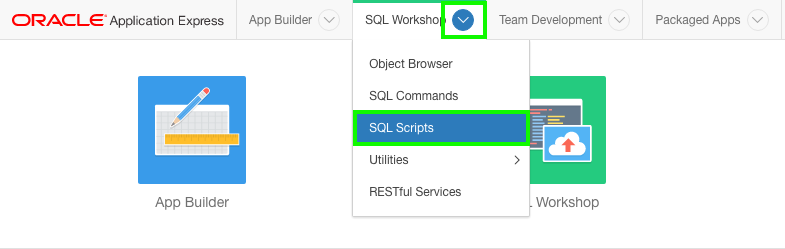
Click Upload.
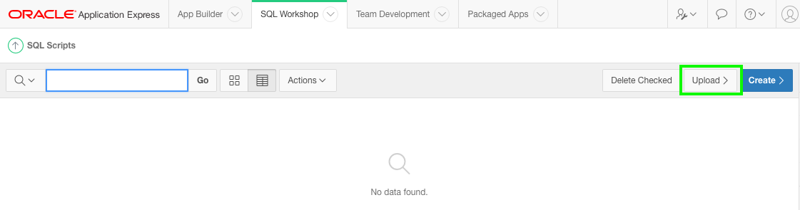
Click Choose File, open the working directory where you extracted apex-basic-demo-projects-2848024.zip, open the files folder.
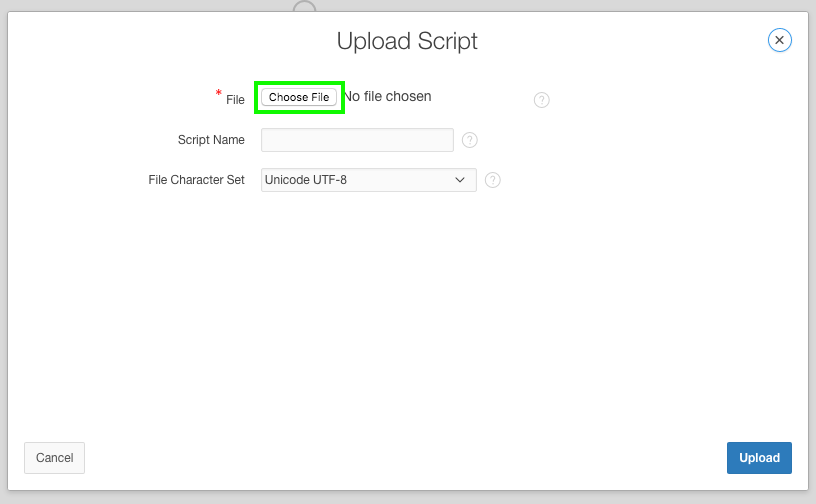
Locate the Demo_Project_Basic_Tables.sql file, and double-click the file or click the file and then click Open.
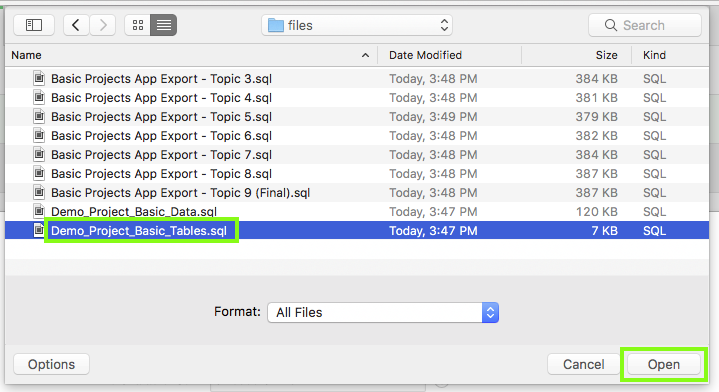
Click Upload.
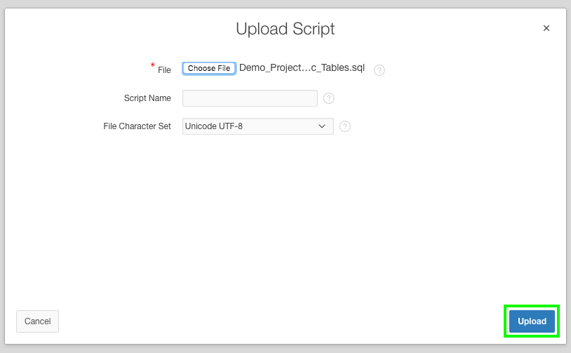
Review the uploaded script to see what tables will be created.
In the SQL Scripts list, click the Edit icon (pencil), to the left of the script you just uploaded.
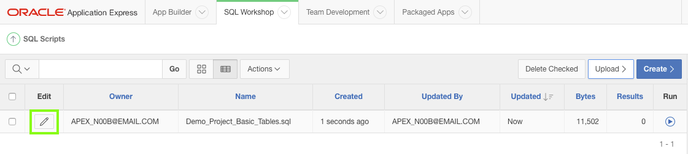
The script file creates the following database objects:
DEMO_TEAM_MEMBERS - Stores the details for the users of the application including a photo.
Includes:
Primary Key - ID
Unique Key - USERNAME
Before Insert or Update Trigger - Populates ID with Globally Unique Identifier (GUID); Populates audit columns; Sets USERNAME to uppercase
DEMO_PROJECTS - Stores the details for the projects, including the lead, status and completed date.
Includes:
Primary Key - ID
Unique Key - NAME
Foreign Key - PROJECT_LEAD must match an ID in DEMO_TEAM_MEMBERS
Index - PROJECT_LEAD to improve query performance on the foreign key column
Before Insert or Update Trigger - Populates ID with GUID; Populates audit columns
DEMO_MILESTONES - A child table under projects for milestones, including the due date.
Includes:
Primary Key - ID
Foreign Key - PROJECT_ID must match an ID in DEMO_PROJECTS
Index - PROJECT_ID to improve query performance on the foreign key column
Before Insert or Update Trigger - Populates ID with GUID; Populates audit columns
DEMO_TASKS - A child table under projects for tasks, optionally for a given milestone, and including an assignee and whether completed.
Includes:
Primary Key - ID
Foreign Key - ASSIGNEE must match an ID in DEMO_TEAM_MEMBERS
Foreign Key - PROJECT_ID must match an ID in DEMO_PROJECTS
Foreign Key - MILESTONE_ID must match an ID in DEMO_MILESTONES
Indexes - ASSIGNEE, PROJECT_ID, MILESTONE_ID to improve query performance on the foreign key columns
Before Insert or Update Trigger - Populates ID with GUID; Populates audit columns
DEMO_TO_DOS - A child table under tasks for to dos, and including an assignee and dates.
Includes:
Primary Key - ID
Foreign Key - PROJECT_ID must match an ID in DEMO_PROJECTS
Foreign Key - TASK_ID must match an ID in DEMO_TASKS
Foreign Key - ASSIGNEE must match an ID in DEMO_TEAM_MEMBERS
Indexes - PROJECT_ID, TASK_ID, ASSIGNEE to improve query performance on the foreign key columns
Before Insert or Update Trigger - Populates ID with GUID; Populates audit columns
DEMO_LINKS - A child table under tasks for links.
Includes:
Primary Key - ID
Foreign Key - PROJECT_ID must match an ID in DEMO_PROJECTS
Foreign Key - TASK_ID must match an ID in DEMO_TASKS
Indexes - PROJECT_ID, TASK_ID to improve query performance on the foreign key columns
Before Insert or Update Trigger - Populates ID with GUID; Populates audit columns
Click Run.
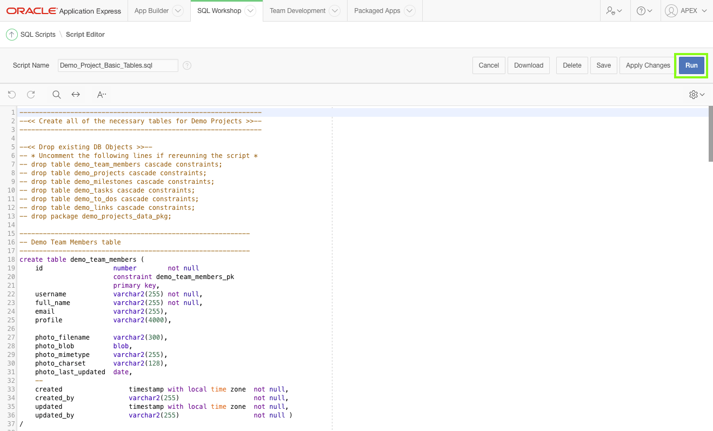
Click Run Now.
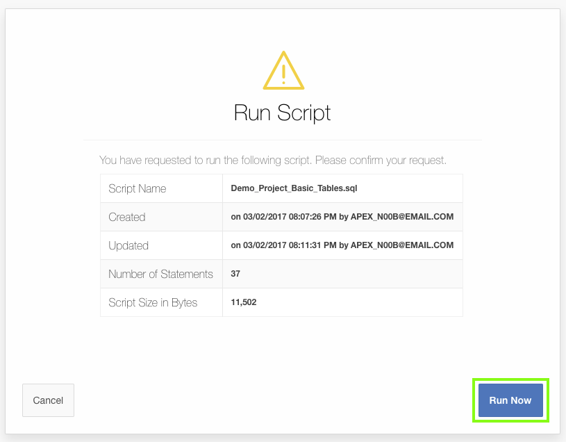
Click the View Results icon for the script you just ran.
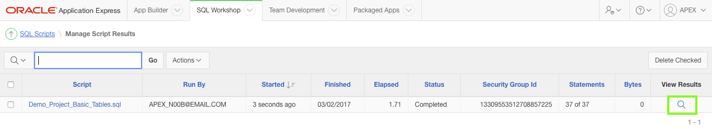
At the bottom of the results page you should see "37" Statements Processed, "37" Successful, and "0" With Errors.
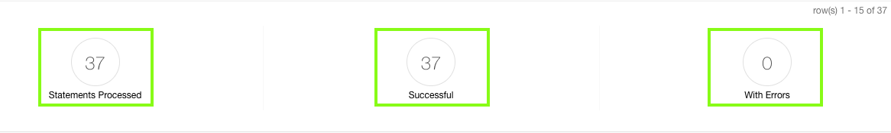
Currently the tables you created do not have any data. A script has been provided that creates an Oracle database package which can be run at any time to insert or reset the data in the tables.
Use SQL Workshop to upload a script that can be used to populate table data.
Click SQL Scripts.
Click Upload.
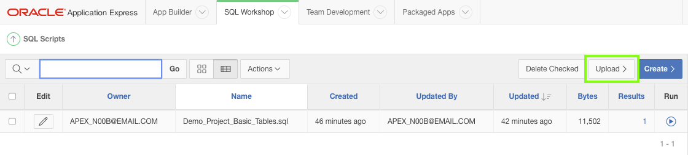
Click Choose File, where you extracted apex-basic-demo-projects-2848024.zip, open the files folder.
Locate the Demo_Project_Basic_Data.sql file, and double-click the file or click the file and then click Open.
Click Upload.
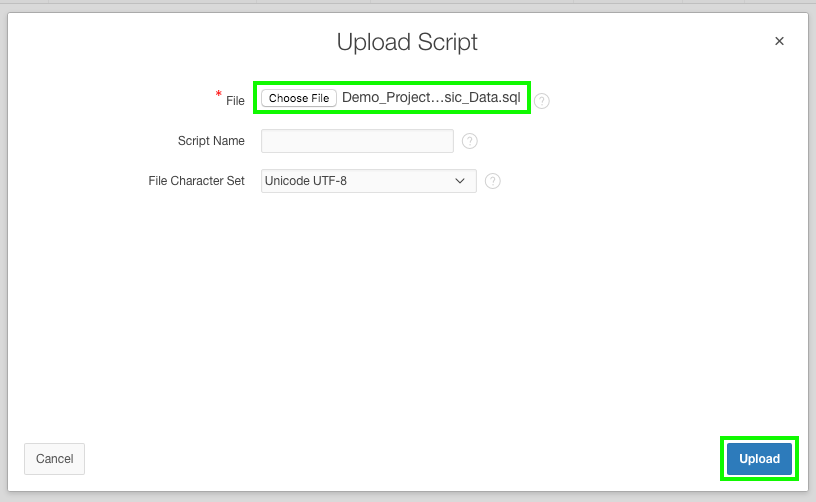
Click the Run icon to the right of the script you uploaded (top row).
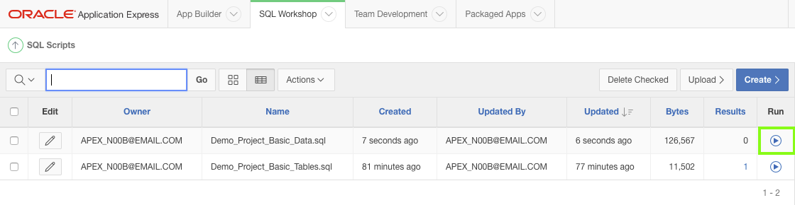
Click Run Now.
Click the View Results icon for the script you just ran (top row).
At the bottom of the results page you should see "2" Statements Processed, "2" Successful, and "0" With Errors.
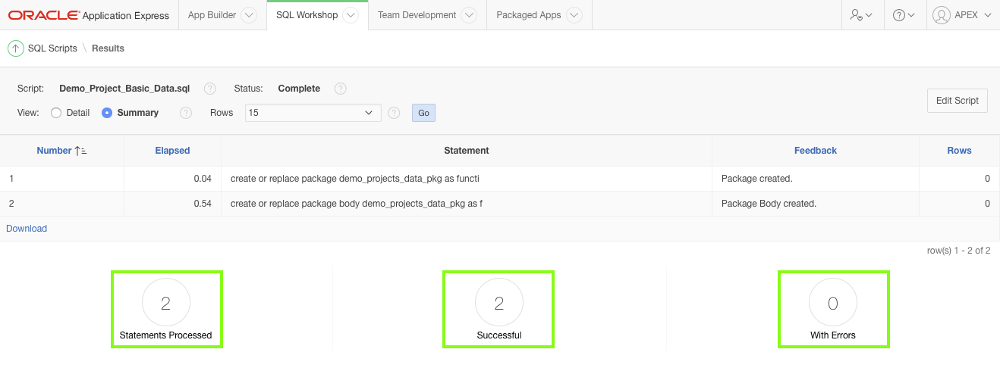
In the previous steps you uploaded a package called DEMO_PROJECTS_DATA_PKG. However, this package hasn't yet been run so the tables you created still don't have any data. The SQL Commands facility, within SQL Workshop, allows a developer to run any valid SQL commands. You will run a SQL command to execute the data package and populate the tables.
Use SQL Commands to execute an Oracle Database package.
Click the Up arrow ( ↑ ), before SQL Scripts.
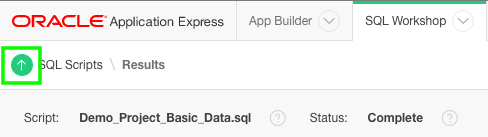
Click SQL Commands.
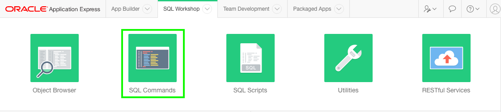
Enter the following code:
begin
demo_projects_data_pkg.load_sample_data;
end;
Click Run.
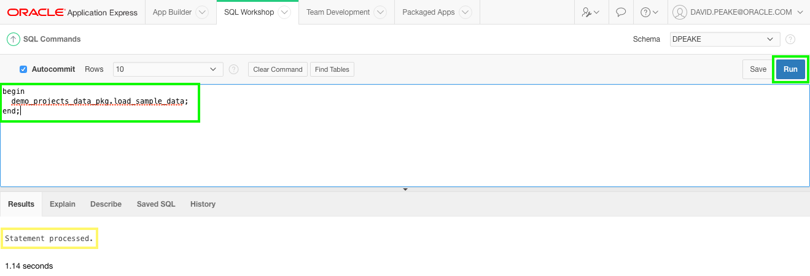
The Results will show: Statement Processed.
Use the Object Browser within SQL Workshop to review all of the database objects, such as the tables and packages you created, available in the underlying Oracle database schema which is associated with the Application Express workspace you logged into.
At the top of the page, select SQL Workshop and then select Object Browser.
In Object Browser, select the DEMO_TEAM_MEMBERS table, then click on the Data tab.
Note: There are a number of other tables listed, outside of those you created using the script file above.
The APEX$ tables are created by Application Express to store internal data specific to your workspace.
Tables such as DEMO_CUSTOMERS were created when the Sample Database Application was installed.
The Sample Database Application may be installed by default when an Application Express Workspace is created.
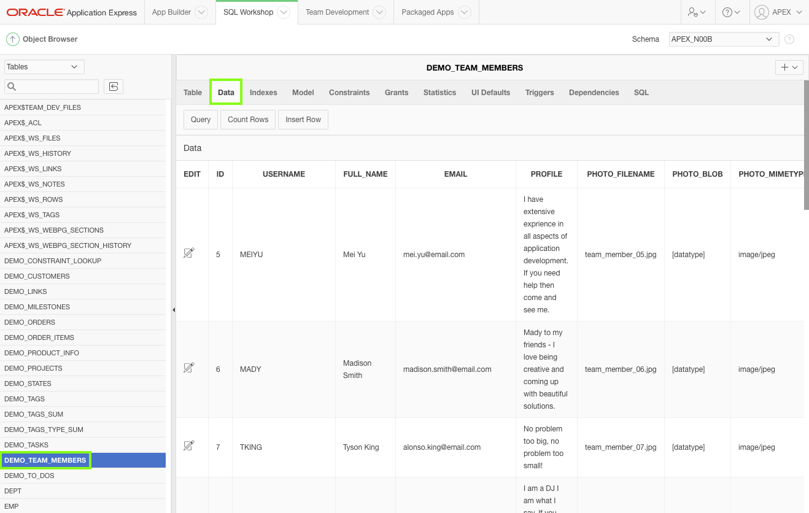
To review the package you created, select Packages and select DEMO_PROJECTS_DATA_PKG.
Click Body to review the primary PL/SQL rather than the specification.
Note: This package includes complex PL/SQL code to insert images and replicate users entering in records. It is not important that you understand the PL/SQL code in this package, as you will not normally have to populate data in this matter. Generally, you would create the tables with no data and then use the application you build to insert the records.
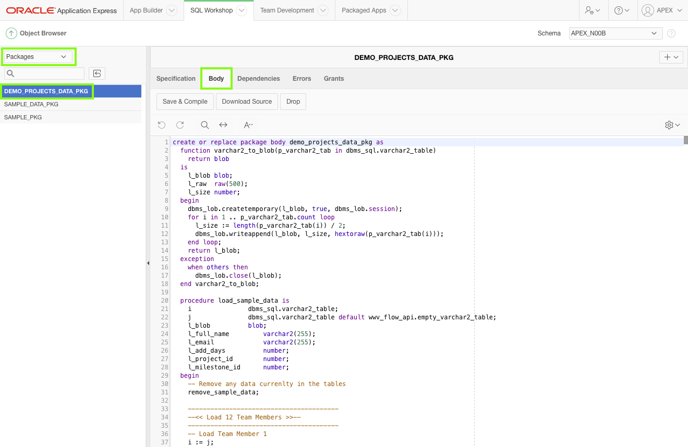
3. Creating the Initial Application
In this topic, you create the initial application using the Create Application wizard to define multiple pages.
Now that you have created the underlying tables, you are ready to create a desktop application.
You will be adding reports and forms for the tables you created.
Generally, when developing an application you will not know all of the pages required at the beginning, so will only generate a select number of pages initially, and then use the Create Page wizard to add additional pages as required.
However, for this exercise you will generate most of the pages required for the application up front.
Click the down arrow ( ↓ ) next to App Builder, then select Create.
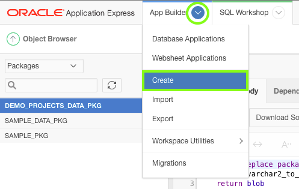
Click Desktop. Note: Desktop is selected by default.
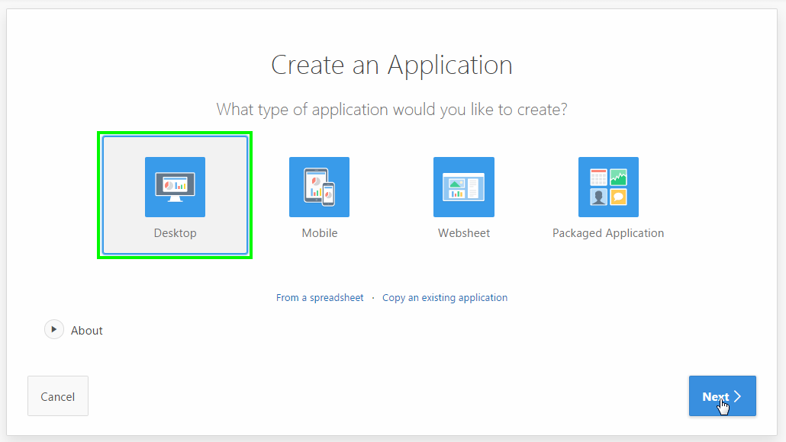
In Name, enter Demo Projects.
Click Next.
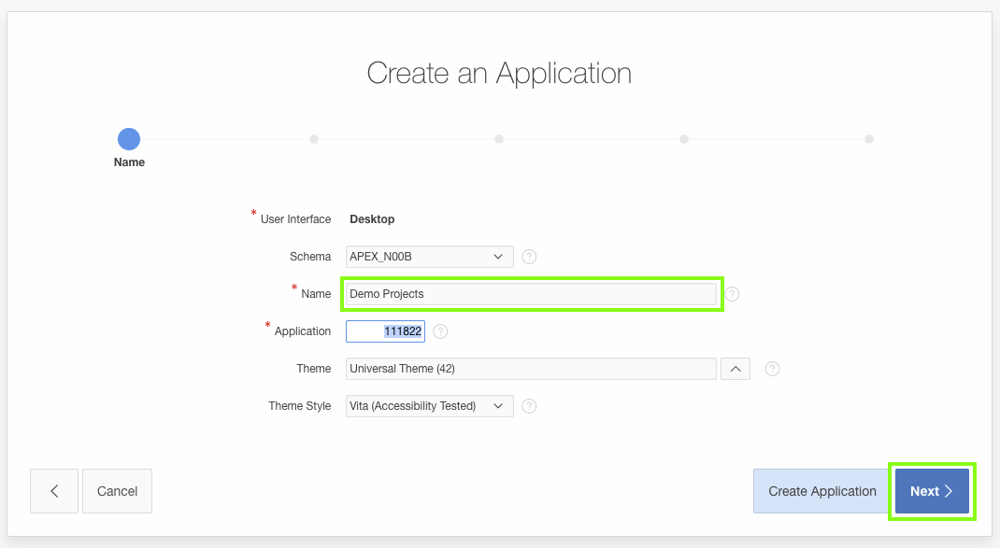
The Create Application Wizard creates a Home page automatically.
Any number of pages can be added into the initial application by simply clicking Add Page, and then selecting the appropriate details.
Once the page(s) have been added, certain attributes, such as names, labels, and sequence, can be updated by clicking on the edit icon for that page.
Individual pages can also be removed from the list by selecting the X to the right of each page.
Add the DEMO_TEAM_MEMBERS report and form pages.
Click Add Page.
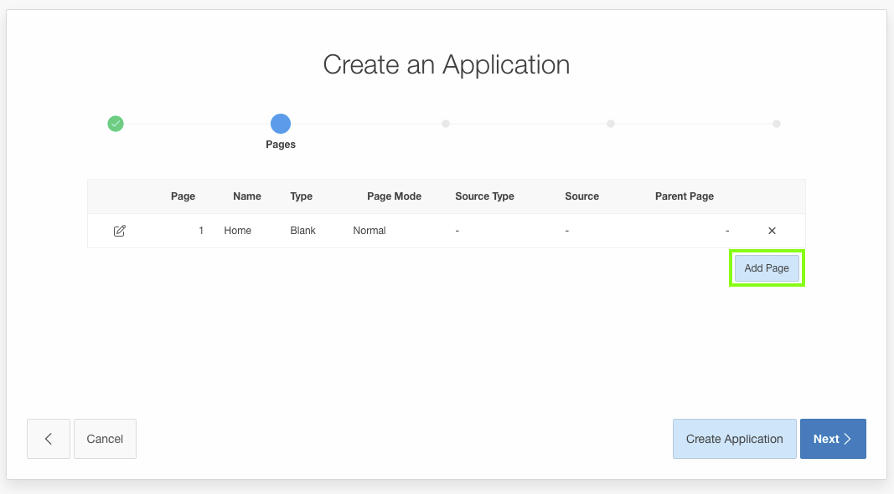
Add a report and form:
Select Page Type - select Report and Form
Table Name - select DEMO_TEAM_MEMBERS
Report Type - select Interactive Report {Default}
Form Page Mode - select Modal Dialog {Default} Note: If you are running Application Express on a smaller browser, you may need to scroll down within the dialog pages to see all of the items, such as Form Page Mode.
Click Add Page.
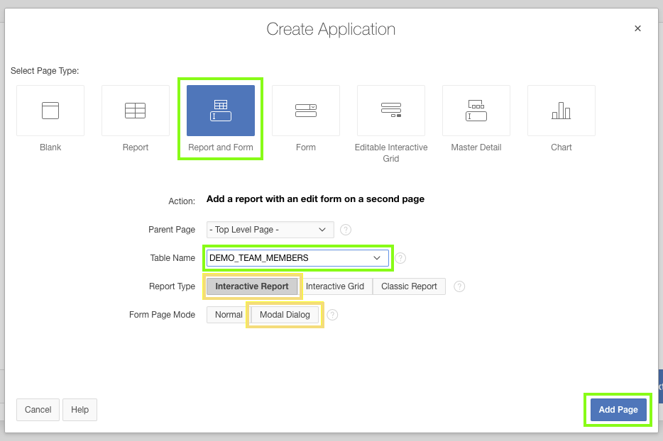
The page name for Team Members is currently listed as 'Demo Team Members'. This can readily be updated before creating the initial application.
Click the edit icon, represented by a pencil hovering over a square, corresponding to Page 2 - Demo Team Members.
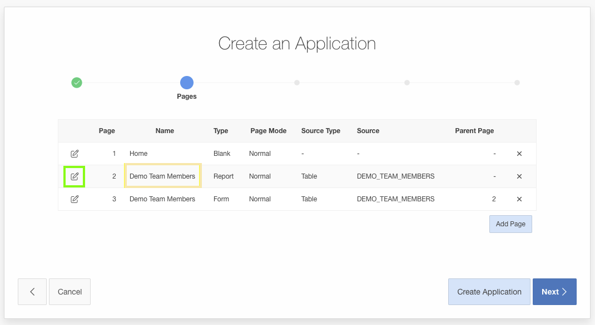
For Page Name enter Team Members.
Click Apply Changes.
Similarly, change the Page Name for Page 3 to Maintain Team Member.
Verify that your screen matches the next illustration.
Click Create Application.
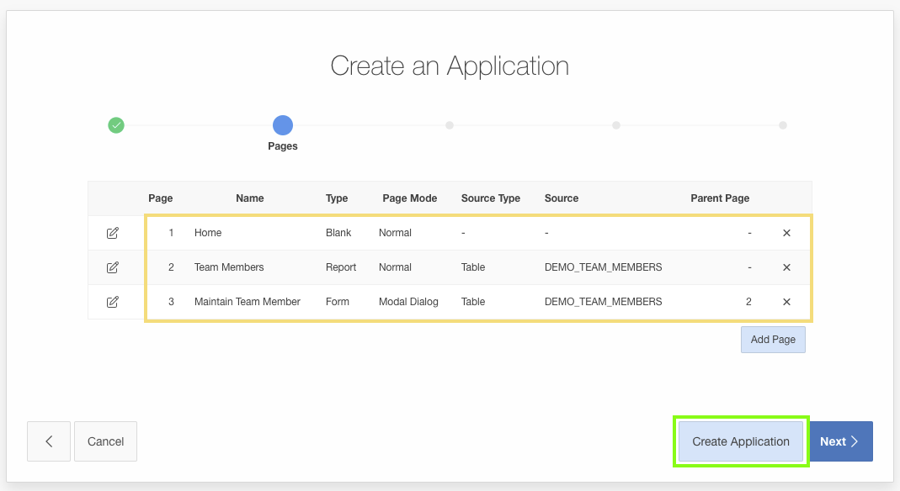
Click Create Application on the confirmation page.
Not all page types, such as two page master-detail and calendars, can be created using the Create Application wizard.
Therefore, to add two page master-detail pages you need to utilize the Create Page wizard
Click Create Page.
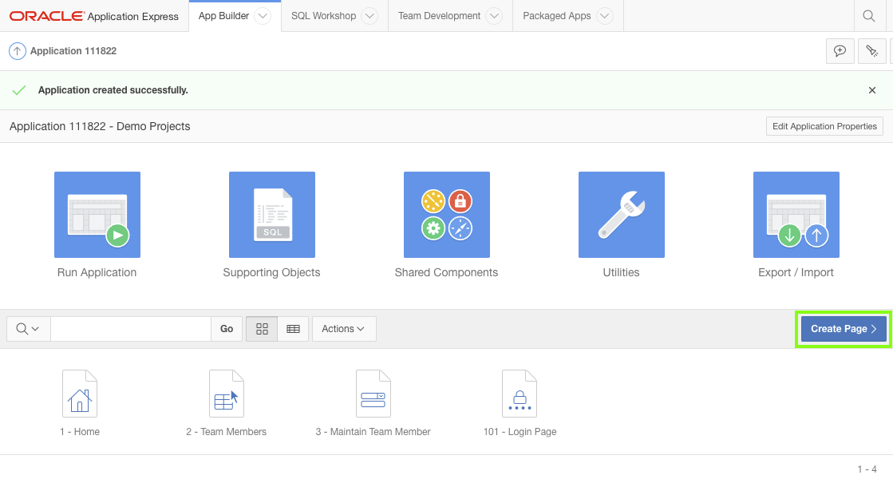
For Select a Page Type, select Form.
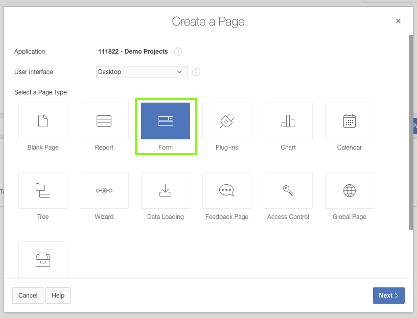
For Form - Page Type, select Two Page Master Detail.
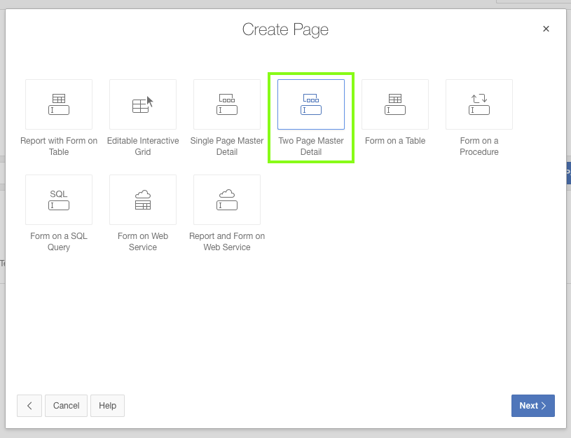
The Page Attributes page appears.
Enter the following:
Master Page Name - enter Projects
Detail Page Name - enter Maintain Project
Breadcrumb - select Breadcrumb. Note: The Master Page Entry Name and Detail Page Entry Name are automatically populated with the name you entered into the page names.
Click Next.
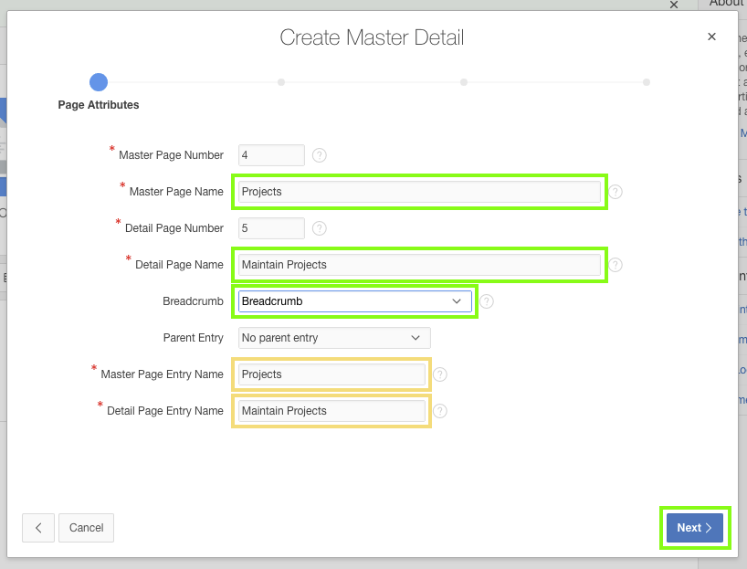
For Navigation Preference, select Create a new navigation menu entry.
Click Next.
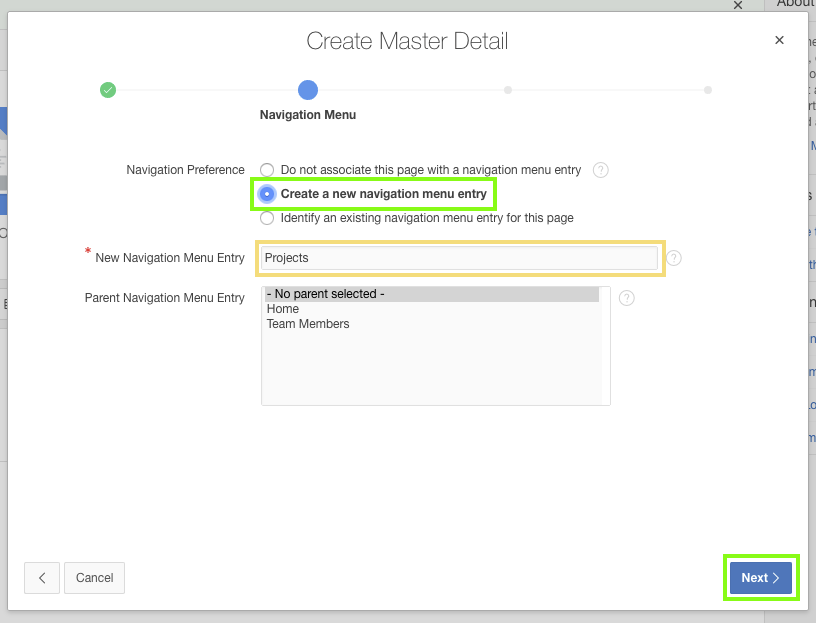
For Master Source, enter the following:
Table / View Name - select DEMO_PROJECTS (table)
Form Navigation Order - select CREATED (Timestamp(6) With Local Time Zone)
Click Next.
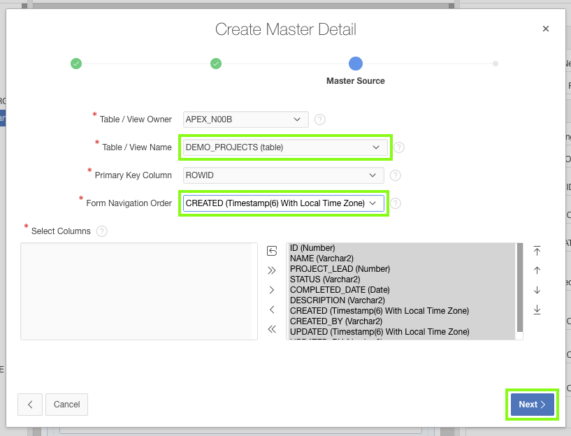
For Detail Source, enter the following:
Table / View Name - select DEMO_MILESTONES (table)
Master Detail Foreign Key - select ID -> PROJECT_ID
Click Create.
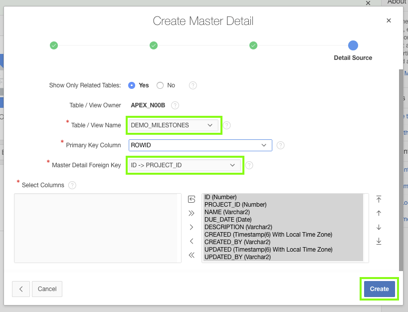
When you create a new page using the Create Page wizard, instead of returning to the application home page, Page Designer is displayed.
It will show details of the page you just created.
Page Designer is a comprehensive integrated development environment (IDE) for managing all aspects of the currently selected page.
In the next topic Page Designer will be covered in detail.
Use the Create Page wizard to create a calendar.
In the Page Designer toolbar, click Add ( + ), then select Page.
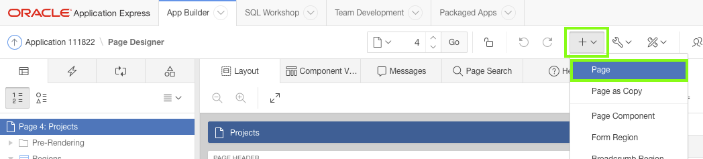
For Select a Page Type, select Calendar.
The Page Attributes page appears.
Enter the following:
Page Name - enter Calendar
Breadcrumb - select Breadcrumb
Click Next.
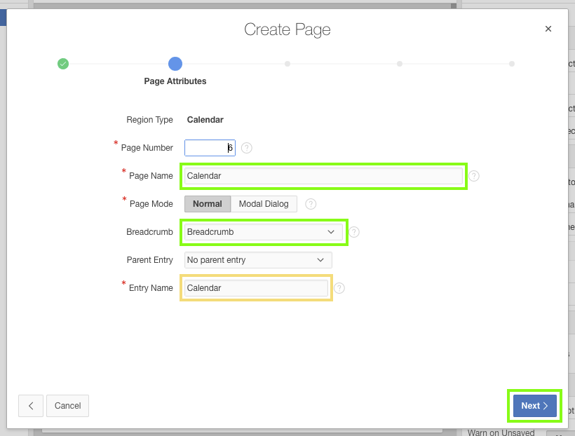
For Navigation Preference, select Create a new navigation menu entry.
Click Next.
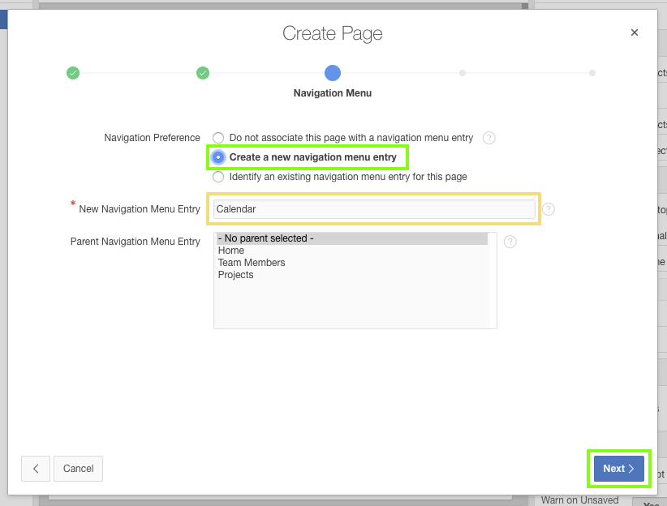
For Source, enter the following:
Source Type - select Table
Table / View Name - select DEMO_TASKS (table)
Click Next.
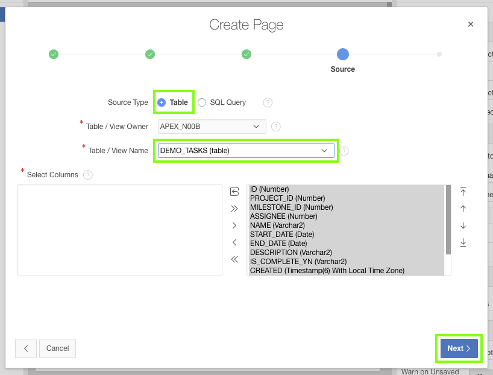
For Settings, enter the following:
Display Column - select NAME
End Date Column - select END_DATE
Click Create.
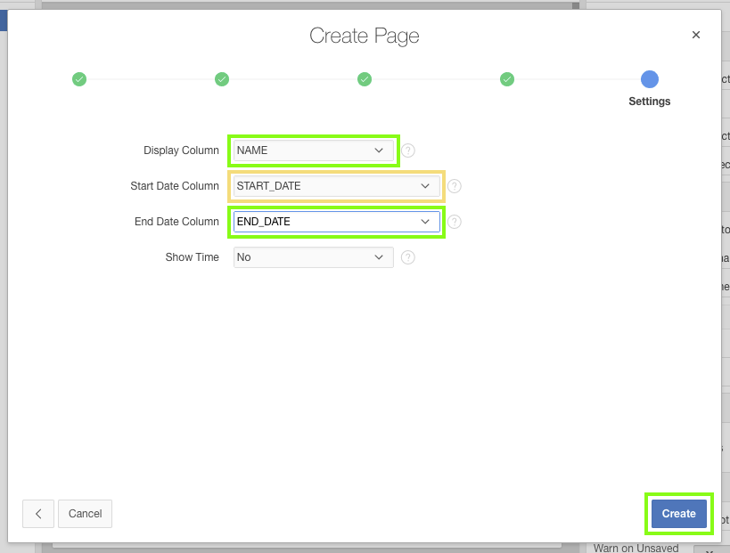
By running the application you can see what the generated pages look like.
Click Save and Run on the toolbar (next to the Save button).
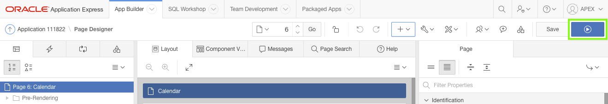
The application login page is displayed, as you have not logged into the runtime environment previously. Note: When you run the application from the Application Express Builder, the runtime environment is opened in a new tab or a new window. Whether it is opened in a tab or window is dependent on the browser and the preferences defined.
Enter your username and password credentials that you use to log into the Application Builder.
Click Log In. Note: Password has the attribute Submit when Enter Pressed set to Yes. As such you can also press the Enter key, instead of clicking the Log In button.
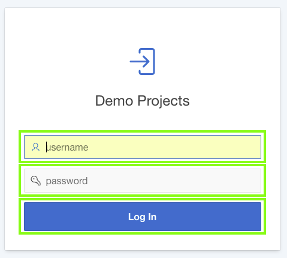
Click on the menu options and navigate around the various pages.
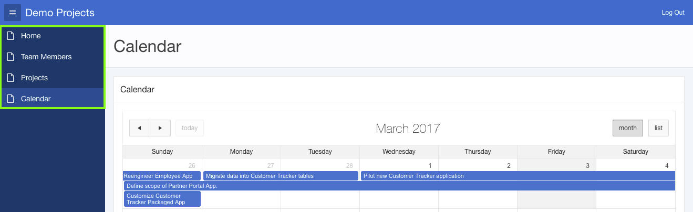
In this topic you used wizards to generate multiple pages. However, this is just the start of your application development, and the generated pages still need more work for your application to be ready for production.
4. Updating the Home Page
In this topic, you create a dashboard by adding new components to the Home page of the application.
Note: If you have not completed the previous topic, import the Basic Projects App Export - Topic 3.sql file into your workspace, and continue working from this topic forward. You can find the export file in the /files subdirectory where you unzipped the original file. See Appendix A - Importing an Application.
Importing this file will not create the database objects. To create these objects follow the steps in 2. Loading the Tables and Data.
In the previous topic you finished by running the application.
Given that you ran the application from the Application Builder, there is a Developer Toolbar at the bottom of the screen.
This toolbar allows developers to quickly navigate between runtime and various sections within the Application Builder.
The Developer Toolbar also allows developers to initiate and view runtime debugging, show the HTML grid, quick edit page components, and run the Theme Roller.
Navigate to the Home page in the runtime application.
In the Developer Toolbar, click Edit Page 1.
Note: If you are not on the Home page then the Developer Toolbar will show the current page number, and clicking on Edit Page xx will navigate to that page, instead of Page 1.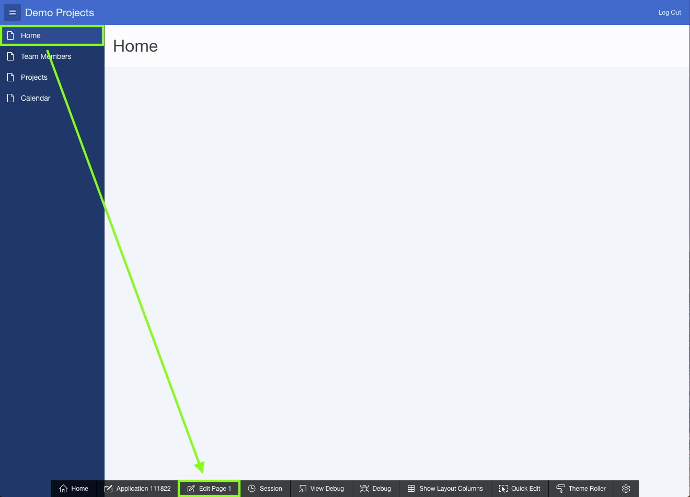
The Page Designer is displayed for Page 1.
About Page Designer
The Page Designer is a powerful IDE that includes a toolbar and multiple panes, used to maintain and enhance pages within Oracle Application Express applications.
The toolbar across the top of the page has a number of capabilities:
Page Selector - Displays the current page.
You can enter a page number directly, or click on the popup list of values to select a page.
Page Lock - Indicates if the page is unlocked (clear), locked by you (green), or locked by another developer (red).
By clicking on this icon you can lock or unlock the page, providing it is not locked by another developer.
Undo Changes - Click to undo the previous update you made within Page Designer.
Redo Changes - Click to reapply the last update that was undone using Undo Changes.
Create - Create new pages, regions, shared components, developer comments and team development entries.
Utilities - Perform a check, delete, export, or review the history for the current page.
You can also access the attribute dictionary, application utilities or upgrade the application.
Settings - Switch between displaying three and two columns (panes) in Page Designer.
Team Development - Show the Features, ToDos, Bugs and Feedback entries for this page.
You can also drill into filtered reports for each entry type.
Developer Comments - Drill into the developer comments entered for the current page.
You can also create new comments or delete comments from the modal window that is displayed.
Shared Components - Navigate to the Shared Components page.
Save - Save all changes you have made on the current page.
Save and Run Page - Save all changes and then run the current page.
Note: You will not be able to run modal and non-modal pages directly using Save and Run Page. Instead you will need to navigate to a normal page and run the page from there and then navigate within the running application to the modal or non-modal page.
Of these capabilities you will most often use Page Selector, Undo Changes, Shared Components, Save, and Save and Run Page.
There are three main panes within Page Designer:
Left Pane - Includes tabs for Rendering, Dynamic Actions, Processing, and Shared Components. Each tab displays a list of the corresponding component types and components created on the current page.
Right-click to access context sensitive menus. You can also drag components up and down within the trees to change the position or sequence of the selected component.
Central Pane - Includes tabs for Layout, Component View, Messages, Page Search, and Help.
Layout shows a visual representation of the page. You can add new components to a page by dragging them from the Gallery pane, at the bottom, and dropping them in Layout.
Component View displays the same page components as provided in the left pane but grouped by component type.
Messages displays current errors and warnings. Clicking on a message changes the focus within Property Editor to the corresponding attribute associated with the error or warning.
Page Search enables you to search for any text within the current page.
Help displays attribute specific help. Click on the attribute name within Property Editor to see information and examples for that attribute.
Right Pane - Displays the Property Editor. Use the Property Editor to update attributes for the selected component(s).
When you select multiple components the Property Editor only displays common attributes. Updating a common attribute will update that attribute for all of the selected components.
You can change the size of each pane by selecting the dividers and sliding them left or right. Change the size of Layout and Gallery by sliding the divider between them up and down. You can also drag and drop the tabs between the two left panes.[DP - New screen shot once PD Tabs finalized]
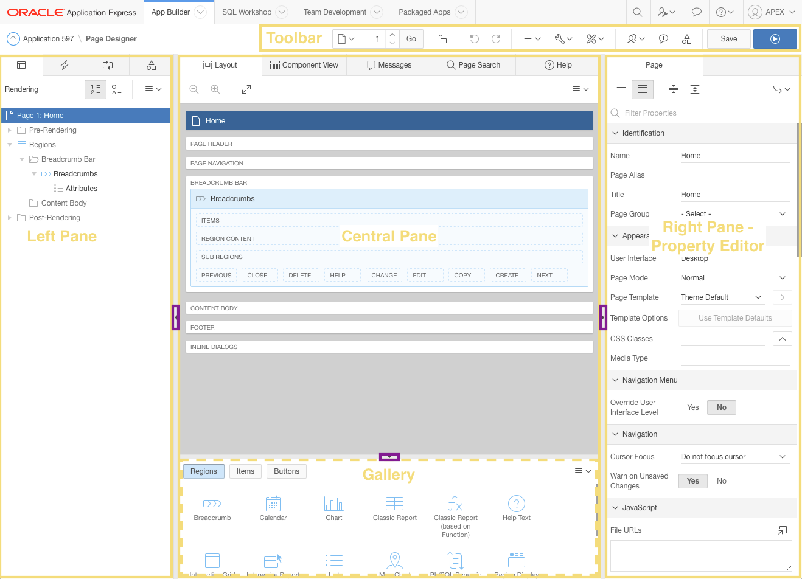
You can access this information from the Application Builder.
In Page Designer, click Help, shown as a question mark on the toolbar, and then select Getting Started in Page Designer. [DP - New screen shot once PD Tabs finalized]
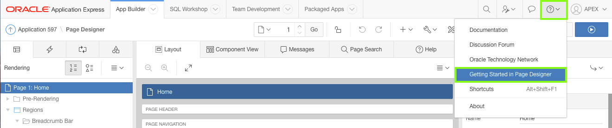
Within most panes there are also a number of useful icons, generally for manipulating the content displayed in that pane.
Of these, the icons within the Property Editor (right pane), will generally be utilized most often.
The Property Editor Icons include:
Show Common - Only the most used attributes, and non-common attributes that have non-default values, are displayed.
Show All - Displays all attributes.
Collapse All - Collapses all groups.
Expand All - Expands all groups.
Go to Group - Navigate to, and expand if necessary, the selected group.
You should try utilizing these icons in different scenarios, to determine the most effective and productive way to update attributes. Note: If you are having issues finding a specific attribute, click Ctrl + F to search the page for the required attribute name.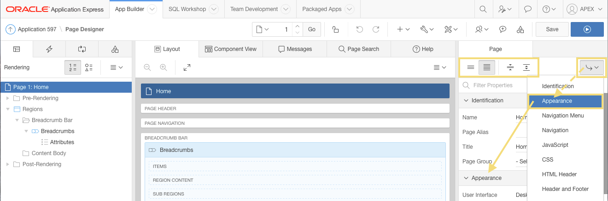
Page Designer also provides a number of keyboard shortcuts that can improve developer productivity.
Click Alt + Shift + F1, or click Help on the toolbar, and then select Shortcuts.
For example, using Go to Rendering (Alt + 1 on Windows / Option + 1 on Mac) and Go to Property Editor (Alt + 6 on Windows / Option + 6 on Mac) are useful for navigating between different page components, such as regions or items, and then updating attributes using only the keyboard, rather than having to move the mouse left to right and right to left continually.
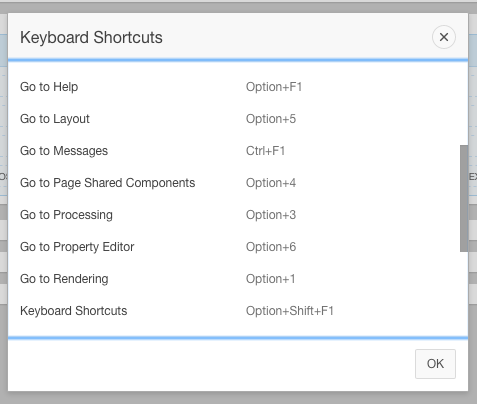
Page Designer includes the Layout in the central pane. The Layout is a representation of how the components will be positioned on the page.
Existing regions, items, and buttons can be moved relative to other components by simply clicking on the component and dragging it to a new location.
For example, items can be placed next to each other by dragging the second item to the end of the first item, and dropping it in the yellow box that appears when you hover in the desired location.
New components can quickly be added to an existing page by dragging the component from the Gallery up to the desired position within the Layout.
Add a bar chart using drag and drop, that shows projects with the number of tasks.
In the Gallery (directly below the Layout), click Regions, and locate Chart.
Click and hold Chart and drag it to the Content Body region. It should appear as a darkened tile before you drop it into place. Note: When you drag the region up, and hover over the small yellow section, below Content Body, the yellow section will expand.
A darker yellow section, with a black box around it, will indicate where the region will be placed.
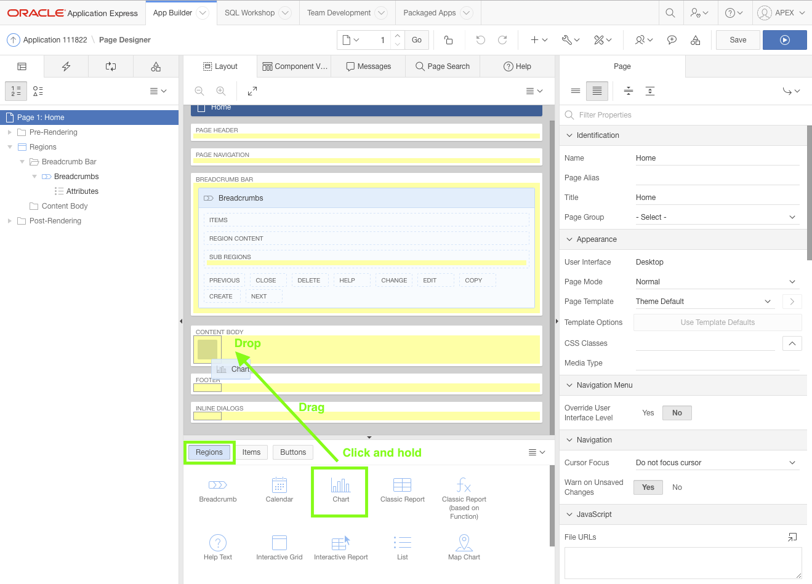
When you first create a region, it is created with default properties, such as a Title of New.
Use the Property Editor to edit attributes for the currently selected component.
In the Property Editor, under Identification, for Title - enter Project Tasks.
Note: The region name in the Rendering tree (left pane) and the Layout (central pane) are updated to reflect the new title, as soon as you navigate out of the Title attribute in the Property Editor.
Above you modified the properties for a region, such as the Title. For certain region types, such as Charts, there are also Attribute properties.
The region properties determine how the region is displayed, whereas, the Attributes for a region (where available) are used to define the characteristics of the region, and how the contents of the region are displayed.
Locate the Rendering tree. Under the Project Tasks region, click Attributes.
In the Property Editor:
Appearance: Orientation - select Horizontal
Appearance: Stack - select Yes
Layout: Height - enter 480
Note: Attributes within the Property Editor are organized into groups. The Property Editor bulleted lists specify Group: Attribute - Action to make it easier for you to locate the given attribute.
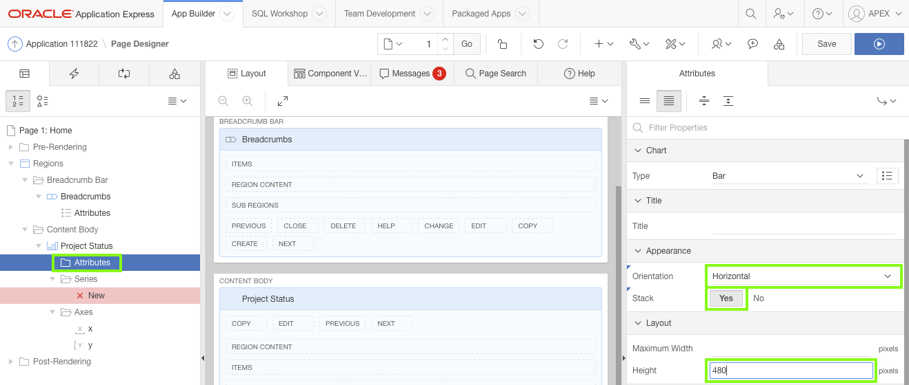
The DEMO_TASKS table includes a column called IS_COMPLETE_YN. This column is populated by users to indicate that a task is complete.
Next, enter chart series details for completed and incomplete tasks within a project.
In the Rendering tree, nested under the Project Tasks region, click Series X New.
In the Property Editor:
Identification: Name - enter Completed Tasks
Source: SQL Query - copy and paste the following:
select p.created
, p.id
, p.name
, count(t.id) tasks
from demo_projects p
, demo_tasks t
where p.id = t.project_id
and nvl(t.is_complete_yn,'N') = 'Y'
group by p.created, p.id, p.name
order by p.created
Column Mapping: Label - select NAME
Column Mapping: Value - select TASKS
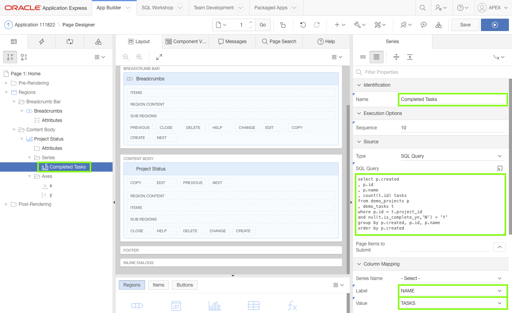
The easiest way to create the second series is to duplicate the series you just entered.
In the Rendering tree, right-click Series Completed Tasks and select Duplicate.
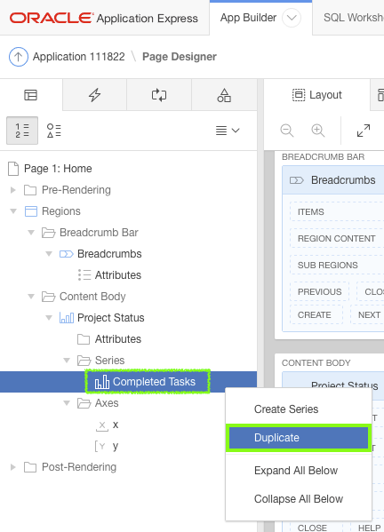
Enter the following:
Identification: Name - enter Incomplete Tasks
Source: SQL Query - copy and paste the following:
select p.created
, p.id
, p.name
, count(t.id) tasks
from demo_projects p
, demo_tasks t
where p.id = t.project_id
and nvl(t.is_complete_yn,'N') = 'N'
group by p.created, p.id, p.name
order by p.created
Note: The two series, "Completed Tasks" and "Incomplete Tasks", are defined by counting the DEMO_TASKS for each project record and using an appropriate WHERE condition.
Update the Axes to add labels.
In the Rendering tree, nested under the Project Tasks region, click Axes x.
For Identification: Title enter Projects.
In the Rendering tree, click Axes y.
For Identification: Title enter Tasks.
Create a report that allows each Team Member to see their outstanding tasks.
In the Rendering tree, right-click Content Body and select Create Region.
In the Property Editor:
Identification: Title - enter My Outstanding Tasks
Identification: Type - select Classic Report
Source: SQL Query - copy and paste the following:
select p.name project
, t.name task
, t.end_date
from demo_tasks t
, demo_projects p
, demo_milestones m
, demo_team_members tm
where p.id = t.project_id
and m.id = t.milestone_id (+)
and tm.id = t.assignee
and nvl(t.is_complete_yn, 'N') = 'N'
and upper(tm.username) = upper(:APP_USER)
order by t.end_date
Note: The where condition of username = :APP_USER restricts the records to those assigned to the person running the application.
Click Save and Run on the toolbar.
Note: You should not need to enter your username and password credentials again, as you have already logged into the runtime application.
Note: If a dialog window called Focus Page is displayed, click Try Again to navigate to the runtime environment.
Application Express 5.1, unlike earlier releases, allows developers to update the display characteristics of regions in the runtime environment.
This is achieved by invoking Live Template Options in the runtime environment. As options are changed developers can see the effects on the underlying region immediately.
Template Options can also be updated within Page Designer by clicking Appearance: Template Options which will invoke a pop-up modal dialog.
Click Quick Edit in the Developer Toolbar
Quick Edit is used to select individual page components, such as regions, items, columns, or buttons.
If you click on one of these page components Page Designer will be invoked with focus placed on the selected component.
When hovering over regions a wrench (or spanner) is displayed in the top right corner.
Clicking this wrench will invoke the Live Template Options dialog.
Hover over the My Outstanding Tasks region, and click the wrench in the top right corner.
The Live Template Options modal dialog will be displayed on top of the runtime page.
Enter the following for Region:
General: Remove Body Padding - click the checkbox to enable the option
Body Height - select 480px
Note: As options are changed, using Live Template Options, the display of the selected region will be affected immediately in the underlying runtime page.
Region Template Options, such as Body Height, Header, Style and so on, alter the overall presentation of a region.
For certain region types, such as Charts, there are also Attribute properties.
The region properties determine how the region is displayed, whereas, the Attributes for a region (where available) are used to define the characteristics of the region, and how the contents of the region are displayed.
In the Live Template Options dialog, click the Attributes tab.
Enter the following:
General: Stretch Report - click the checkbox to enable the option
Report Border - select No Outer Borders
Click Save.
The Home Page should look like the image below.
The Home page is now complete. However, the navigation menu should have an icon.
The Navigation Menu is defined as a list within Shared Components.
You use Shared Components to define various different types of objects in one place that can be used across an application.
As a best practice, Oracle recommends defining the code once in a shared component wherever possible and then reference that component on the different pages. Note: Some of the Shared Components, such as Authentication Schemes, Lists, Navigation Menu, and Themes, can only be defined as Shared Components, while others, such as List of Values, can also be implemented directly on individual pages.
Update the Navigation Menu entries, and include icons for each entry.
From the runtime environment, click Application #### in the Developer Toolbar (where #### represents your application ID, such as Application 111822).
Click Shared Components.
Locate the Navigation section, and click Lists.
From the Lists report, select Desktop Navigation Menu.
From the List Details report, select Home.
In the Home list entry, locate the Image/Class item. Click the up arrow, at the end of the field ( ^ ), to display a list of images.
Review the library of images, provided by Font APEX (fa).
These images can be utilized throughout the application to improve aesthetics, and provide a visual indicator, rather than just text.
Locate and select fa-home.
Click the Next button ( > ), adjacent to the page title, to navigate to the next entry. Note: As you navigate from one record to another, any changes to the previous record are automatically saved.
On the Team Members list entry, for Image/Class enter fa-users.
Click the Next button ( > ). Note: You can simply type in the image name, such as fa-users, directly into the Image/Class field, rather than bringing up the library of images.
On the Projects list entry, for Image/Class enter fa-folder.
Click the Next button ( > ).
On the Calendar list entry, for Image/Class enter fa-calendar
Click Apply Changes.
Click Run on the toolbar to see the updated navigation menu.
In this topic you learnt how to utilize Page Designer to add and enhance page components on the Home page. You also utilized Live Template Options to improve the appearance of regions.
Finally, you explored Shared Components and updated a common component (the menu) for all pages.
5. Updating the Team Member Pages
In this topic, update the Team Member pages by improving the report and improving the modal form page.
Note: If you have not completed the previous topic, import the Basic Projects App Export - Topic 4.sql file into your workspace, and continue working from this topic forward. You can find the export file in the /files subdirectory where you unzipped the original file. See Appendix A - Importing an Application.
Importing this file will not create the database objects. To create these objects follow the steps in 2. Loading the Tables and Data.
In the runtime environment, go to the Home page.
Click on Edit Page 1 in the Developer Toolbar.
The App Builder appears, displaying Page 1 in Page Designer
Click on the up arrow ( ↑ ) next to the page number in the toolbar to navigate to Page 2: Team Members.
Interactive Reports in Application Express enable end users to manipulate what data is shown and how it is displayed.
The application developer simply needs to define the SQL statement to retrieve all of the data from the underlying Oracle Database tables.
End users can readily manipulate that data for their own requirements, rather than needing the application developer to define numerous reports.
Interactive Reports are the default report type when generating report pages from the Create Application wizard.
However, the report shows all of the columns in the table and some of those columns (such as those associated with the image), should not be included in the report.
Remove columns from the report by updating the SQL Source for the region.
In the Rendering tree, locate the Team Members region. Click the Team Members region.
In the Property Editor, click Code Editor
The Code Editor includes numerous features to help developers write code within Application Express. The editor provides enhanced editing for PL/SQL, SQL, HTML, CSS, and JavaScript component properties. The code highlighting is determined by the input required for the specific property. The Code Editor also includes undo, redo, find, replace, a link to Query Builder, code auto completion, and SQL validation.
In the Code Editor, replace the existing SQL with copy and paste of the following:
select
"ID",
"USERNAME",
"FULL_NAME",
"EMAIL",
"PROFILE",
"CREATED",
"CREATED_BY",
"UPDATED",
"UPDATED_BY"
from "DEMO_TEAM_MEMBERS"
Click Validate, to ensure the SQL statement is valid.
Click OK.
Some of the report columns, such as ID, CREATED, CREATED_BY and so forth, should be included in the report, but not visible by default.
That way, if users want to review that information, they can manipulate the Interactive Report and make the columns visible.
To change what columns are displayed in the Interactive Report by default, you must alter the report in the runtime environment and then save the report.
Access the runtime application by clicking Save and Run Page on the toolbar.
In the runtime environment, locate the Actions buttons in the report header.
Click Actions and then select Select Columns.
In the Display in Report column, hold the Ctrl key and click the following items to select them:
Id
Username
Created
Created By
Updated
Updated By
Click the Remove button ( < ) in the center.
Click Apply.
The report columns should be ordered by the Full Name.
Click the Full Name column Heading, and then select Sort Ascending.
To keep the changes you just made, you must save the report. If you were to log out and log back into the runtime environment, or another user runs the report, then the columns you just removed would be visible again.
Click Actions, select Report, and then select Save Report.
Because you are the developer of this report, you can save your modifications and create a new default report. End users do not have this capability.
For Save, select As Default Report Settings.
As a developer, you can choose to save the default report as either the primary or an alterative report. The primary report is how all end users will see the report when they first access the page. You can save any number of alternative reports, which end users can run by selecting from a drop-down list, that is automatically displayed once any additional report layouts are saved. In this instance you want to save the modified report as the primary report.
Verify the Default Report Type is Primary, and click Apply.
By default, buttons are positioned in the region they are associated with. Move the Create button at the top of the page to the Breadcrumbs region.
From the runtime environment, return to the Application Builder by clicking Edit Page 2 in the Developer Toolbar.
In the Rendering tree, locate the CREATE button under Content Body.
Click and hold the CREATE button and drag it up into the Breadcrumbs region.
It will appear as a child within its own Region Buttons folder. Tip: To undo a previous action, press Ctrl+Z in Windows or click the Undo button in the top-right toolbar.
In the Property Editor:
Identification: Label - enter Add Team Member
Layout: Button Position - select Create
Appearance: Hot - select Yes
Click Save and Run Page to see the updated report.
Click the Edit icon (pencil), next to a team member's name to view the modal form page, for the person you selected.
On the Developer Toolbar at the bottom of the page, click Edit Page 3 to jump to the modal page in Page Designer.
Click the Maintain Team Members region. In the Property Editor, locate Template Options and click Use Template Defaults.
For Item Width select Stretch Form Fields.
Click OK.
The generated page includes a page item for every column in the DEMO_TEAM_MEMBERS tables.
You need to make the following changes:
Make the Username and Full Name fields mandatory. If either of these fields are left blank when the record is saved, then an error message should display.
You expect users to enter multiple lines of information into the Profile field. Therefore, you need to convert the Profile item type to Textarea.
Alter the Photo Blob field to support file upload to a table.
Since the other photo fields are populated when a file is uploaded, these items must be hidden from users.
In the Rendering tree, under Content Body, expand the Items folder (if necessary).
Press and hold the Ctrl key to select more than one item. Select P3_USERNAME and P3_FULL_NAME .
In the Property Editor:
Appearance: Template - select Required
Validation: Value Required - select Yes
In the Rendering tree, click the P3_PROFILE item.
In the Property Editor:
Identification: Type - select Textarea
In the Rendering tree, click the P3_PHOTO_BLOB item. For Label, enter Photo.
Click the divider between Layout and the Gallery to collapse the Gallery.
In the Layout, hold the Ctrl key and click the following items to select more than one:
P3_PHOTO_FILENAME
P3_PHOTO_MIMETYPE
P3_PHOTO_CHARSET
P3_PHOTO_LAST_UPDATED
In the Property Editor under Identification, click the Type Quick Pick button and select Hidden.
Note: When you select multiple components, the Property Editor shows a triangle in front of the Attribute Name, and shades the Attribute Value in blue.
If all of the selected components have the same Attribute Value, then the name and value will be displayed normally.
The tables you created earlier include audit columns for storing when and who created and last updated each record.
End users should never be allowed to enter data into these columns.
Furthermore, these columns should not display when the user creates a new record.
Given that audit information is only reviewed on occasion, it is preferable to add these columns into a separate, collapsible region, so they can be reviewed when necessary, but don't take up excessive screen real estate the majority of time.
Reconfigure the audit columns to be Display Only and place them in a conditional sub-region.
In the Rendering tree, right-click the Team Members region and select Create Sub Region.
In the Property Editor, for the New region:
Identification: Title - enter Audit Details
Appearance: Template - select Collapsible
Locate Template Options and click Use Template Defaults, Expanded, Scroll - Default. Then input the following:
Default State - select Collapsed
Style - select Remove UI Decoration
Click OK.
In the Property Editor, click the Go To Group button in the top-right, select Server-side Condition.
In the Property Editor, select the following:
Server-side Condition: Type - select Item is NOT NULL
Server-side Condition: Item - select P3_ID
Move the audit columns into the new region.
From the Rendering tree or Layout, hold the Ctrl key and click the following items to select them:
P3_CREATED
P3_CREATED_BY
P3_UPDATED
P3_UPDATED_BY
In the Property Editor:
Identification: Type - select Display Only
Layout: Region - select ..Audit Details
Click Save.
Note: If you press Save and Run Page when on a modal page, an error message displays because you can't run dialog pages directly from Page Designer.
Modal pages must be invoked from a base page. The reason such pages can not be run directly is that when the modal page is closed it must have a target page to return to, being the page it was invoked from.
Navigate to the tab or browser with the runtime application. Return to the Team Members page, refresh the browser, and select one of the Team Member records to see the improved modal page.
In this topic you learnt how to manipulate an Interactive Report, how to move components using drag and drop, and how to create new regions.
6. Updating the Project Pages
In this topic, you will perform many of the same steps you performed to improve the Team Members pages, updating the report and form pages for projects. However, you will also create a List of Values, add a dynamic action, and add validations.
Note: If you have not completed the previous topic, import the Basic Projects App Export - Topic 5.sql file into your workspace, and continue working from this topic forward. You can find the export file in the /files subdirectory where you unzipped the original file. See Appendix A - Importing an Application.
Importing this file will not create the database objects. To create these objects follow the steps in 2. Loading the Tables and Data.
Return to Application Builder by pressing Edit Page 3 in the Developer Toolbar.
In the App Builder breadcrumbs to the top-left, click Application ####.
Click 4 - Projects.
Modify the existing Projects Interactive Grid and update the SQL Query associated with the report to add summations for milestones and tasks.
Click the DEMO_PROJECTS region.
In the Property Editor, click the Code Editor: SQL Query button, and copy and paste the following SQL:
select ID
, NAME
, DESCRIPTION
, PROJECT_LEAD
, COMPLETED_DATE
, STATUS
, CREATED
, CREATED_BY
, UPDATED
, UPDATED_BY , (select count('x')
from demo_milestones m
where m.project_id = p.id
) milestones
, (select count('x')
from demo_tasks t
where t.project_id = p.id
) tasks
from DEMO_PROJECTS p
Click OK. Note: The milestone and task statistics are determined using inner SQL select statements.
Reconfigure which columns are displayed by default in the Interactive Grid.
In the Interactive Grid runtime window, click Actions and select Select Columns.
Uncheck Displayed for the following items:
Id
Created
Created By
Updated
Updated By
Click Save. Note: The Columns display for an Interactive Grid is different than the same popup for Interactive Reports.
Update the Name and Description columns to allow sorting
In the runtime environment, click Edit Page 4 to return to the Page Designer.
In the Rendering tree, expand the Columns folder under the Projects region.
Hold down the Ctrl key and click the following columns to select them:
NAME
DESCRIPTION
In the Property Editor, enter sort into Filter Properties (at the top of the panel above all of the attributes).
For Sort/Control Break/Aggregate select Yes.
The Project Lead column is currently displaying an identifier instead of the team member's name. Defining a List of Values within Shared Components enables the same control to be used on this page and also the form page for projects.
In Page Designer, click the Shared Components button, found on the right side of the toolbar (not in the Rendering tree).
Under Other Components, click List of Values.
Click Create.
Verify Create List of Values is From Scratch. Click Next.
For Name enter Team Members and for Type select Dynamic.
Click Next.
For Query, clear the field then copy and paste the following:
select full_name as display
, id as return
from demo_team_members
order by 1
Click Create List of Values.
Click Edit Page 4 on the toolbar, to return to Page Designer.
In the Rendering tree, click the PROJECT_LEAD column.
In the Property Editor:
Identification: Type - select Select List
Heading: Alignment - select start
Layout: Column Alignment - select start
List of Values: Type - select Shared Component
List of Values: List of Values - select TEAM MEMBERS
List of Values: Display Extra Values - select No
List of Values: Null Display Value - enter - Select Project Lead -
Currently the Create button is to the right of the region heading. It would look more aesthetically pleasing to place this button at the top of the page and to change the region template.
In the Layout, locate the Breadcrumbs region. Note that there are several elements surrounded by dotted lines. These are placeholders for buttons.
Locate the Projects region. Click and hold the CREATE button and drag it up to the Breadcrumbs region and into the Create placeholder.
In the Property Editor, for Identification: Label enter Add Project.
In the Rendering tree or Layout, select the Projects region.
In the Property Editor, for Appearance: Template select Interactive Report.
Click Save and Run Page to see the completed page.
Interactive Grid allows the columns to be frozen, resized and repositioned using drag and drop.
In the runtime environment, click the Name column heading.
Click the freeze icon (snowflake).
Move the description column to after Tasks.
Hover over the beginning of the Description column's heading until the arrow across a vertical line ( ☩ ) appears.
Click and hold the mouse. Move the mouse down and to the right.
Continue moving to the right until the dark gray bar is to the right of the Tasks column heading and then release the mouse. Note: You can also move columns using Actions : Columns, clicking on a specific column and then use the up ( ↑ ) or down ( ↓ ) icons to move the column as required.
Now resize the columns so that the headings and text fit properly.
Hover over the end of the Name column heading until the arrow across a vertical line appears.
Click and hold the mouse. Move the mouse to the right until all of the project names are fully visible.
Repeat for the remaining columns, ensuring that the headings are fully visible.
Sort the records by their created date.
Click Actions, select Data, and then click Sort.
For Column select Created.
Click Save.
It is important to save the layout so that it displays the same way when end users access the application.
In the runtime environment, click Actions, select Report, and then click Save.
Modify the default Project form page to be more visually appealing and consistent with how the Maintain Team Member page was improved.
In the Demo Projects runtime environment, navigate to the Projects page and click one of the Project names (such as Train Developers on Web development tool), to open the master detail page.
Make the region appearance better and move the previous and next buttons to the breadcrumb region.
In the developer toolbar, click Quick Edit.
Hover over the Maintain Project region (at the top of the page), and then click the wrench (top right corner) displayed in the region.
Within Live Template Options, set the following:
Header - select Hidden but accessible
Style - select Remove UI Decoration
Item Padding - select Slim Padding
Click Save.
In the runtime environment, click Edit Page 5 to return to Page Designer.
In the Rendering tree, hold down the Ctrl key and select the following buttons:
GET_PREVIOUS_ROWID
GET_NEXT_ROWID
In the Property Editor:
Layout: Region - select Breadcrumb
Layout: Button Position - select Create
Update the region items. Make Name a text field, and change Project Lead and Status to lists.
In the Layout, under Content Body, click the P5_NAME item.
In the Property Editor:
Identification: Type - select Text Field
In the Layout, click the P5_PROJECT_LEAD item.
In the Property Editor:
Identification: Type - select Select List
List of Values: Type - select Shared Component
List of Values: List of Values - select TEAM_MEMBERS
List of Values: Display Extra Values - select No
List of Values: Null Display Value - enter - Select Project Lead -
Note: The P5_PROJECT_LEAD item is using the List of Values defined in Shared Components in an earlier topic.
Next define a static list of statuses. You can not define a dynamic list, as you did for TEAM_MEMBERS, as there is not a separate table which stores the statuses.
In the Layout, click the P5_STATUS.
In the Property Editor:
Identification: Type - select Select List
List of Values: Type - select Static Values
List of Values: Static Values - enter STATIC2:Assigned,In-Progress,Completed Note: By specifying STATIC2 the records will be displayed in the order entered, rather than in alphabetic order.
List of Values: Display Extra Values - select No
List of Values: Display Null Values - select No
Click the P5_COMPLETED_DATE item, and for Template select Required.
Note: Generally when an item is mandatory you update the Template to Required and the Value Required to Yes.
However, in this instance the Value Required attribute should remain No because the item is only mandatory when the status is Completed. A validation is added later in this section to enforce this business rule.
Dynamic Actions within Application Express are used to declaratively define client-side behaviors without needing to write JavaScript or AJAX.
Instead the Application Express engine implements the necessary code, based on your declaration.
Create a Dynamic Action that shows the completed date when the status is Completed, and hides the completed date for any other status.
In the Rendering tree, right-click the P5_STATUS item and select Create Dynamic Action.
In the Property Editor:
Identification: Name - enter Show Completed Date
Client-side Condition: Type - select Item = Value
Client-side Condition: Value - enter Completed Note: The capitalization and spelling of the value must match the data entry value exactly in order for the dynamic action to fire.
Note: The When: Item(s) and Client-side Condition: Item already have the value P5_STATUS as you right-clicked on that item to create the dynamic action.
In the Rendering tree, under the Show Completed Date dynamic action, under the True folder, select Show.
In the Property Editor, for Item(s) select P5_COMPLETED_DATE.
In the Rendering tree, right-click Show and select Create Opposite Action.
Note: For Dynamic Action types, such as Show, Enable, and Expand Tree, it is important to also include the corresponding opposite action.
In that way the affected elements are set one way if the Client-side Condition evaluates to True and the opposite if the Client-side Condition evaluates to False. In this case the P5_COMPLETED_DATE item is shown when P5_STATUS equals Completed, and is hidden when any other status is selected.
Add validations to the Maintain Projects page so that when a user changes the status to Completed, they add the Completed Date and that it is not forward-dated.
In the left pane, click the Processing tab.
Right-click the Validating node and select Create Validation.
In the central pane, click the Help tab. Note: The help text displays the currently selected attribute in the Property Editor (right pane). For example, clicking on the Validation Type attribute label displays a list of all the available options, together with a description of when each option will pass (not display the error message) or fail (displays the error message).
In the Property Editor:
Identification: Name - enter Completed Date is Not Null
Validation: Type - select Item is NOT NULL
Validation: Item - select P5_COMPLETED_DATE
Error: Error Message - select the Error Message attribute label (not the data entry area), at which point the Help pane will display the help text for Error Message. On the Help pane under Examples, copy and paste the following #LABEL# must have some value. into the Property Editor attribute
Error: Associated Item - select P5_COMPLETED_DATE
Server-side Condition: Type - select Item = Value
Server-side Condition: Item - select P5_STATUS
Server-side Condition: Value - enter Completed Note: This condition ensures that the validation only fires when the Status item is Completed.
Note: The #LABEL# text within the Error Message will be substituted with the Label of the associated item. In this manner, if the item label is updated the error message will also reflect the updated value. This improves consistency and prevents messages having an outdated label reference.
In the Processing pane, right-click Validating and select Create Validation.
In the Property Editor:
Identification: Name - enter Completed Date is not Forward Dated
Validation: PL/SQL Expression - enter :P5_COMPLETED_DATE <= SYSDATE Note: To reference a page item in PL/SQL you use the :ITEM_NAME syntax. SYSDATE returns the current date from the Oracle Database.
Error: Error Message - enter #LABEL# can not be forward dated.
Error: Associated Item - select P5_COMPLETED_DATE
Condition: Type - select Item is NOT NULL
Condition: Item - select P5_COMPLETED_DATE
Click Save.
In an earlier topic you created a sub-region called Audit Details for the Maintain Team Member page (Page 3).
Since the four items included in that region are the same as those on the Maintain Project page and are associated with the exact same database columns, you can copy them to the Maintain Project page. This approach is easier than creating a new region and updating the items. Copying the region will also copy the previously defined template and template options.
Delete the four audit items before copying the Audit Details region to this page. If you do not delete them, the item names in the copied Audit Details region will be renamed with a unique name (for example, P5_CREATED will be renamed to P5_CREATED_1) to ensure all page items have unique names. Although this renaming will not break the page processing, Oracle does not recommend this approach.
In the central pane, click Layout
In the Layout, hold the Ctrl key and click the following items:
P5_CREATED
P5_CREATED_BY
P5_UPDATED
P5_UPDATED_BY
Press the Delete key or use the context menu (right-click) to remove the four items.
Click Save.
Copy the Audit Details region from Page 3 to Page 5.
In Page Designer, navigate to Page 3.
Click on the Page Finder on the toolbar and click 3 to navigate to Page 3 - Maintain Team Member.
In the left pane, click Rendering.
In the Rendering tree, right-click the Audit Details sub region and select Copy to other Page....
In the Copy Region dialog, input the following:
To Page - enter 5
Copy Region Items - select Yes
Click Next.
Click Copy.
In Page Designer, navigate back to Page 5.
In the Rendering tree, select the Audit Details sub region.
In the Property Editor, for Layout: Parent Region select Maintain Project (The first entry below Breadcrumb).
Save and Run the page.
Try out these functions to see how the page responds:
Change the Status and see how the Completed Date is shown or hidden depending on the status selected.
Save a record with a Status of Completed and no Completion Date - An error message should be displayed.
Save a record with a Completion Date in the future - An error message should be displayed.
In this topic you greatly improved the Project screens to make them more useable.
7. Updating and Adding Detail Regions
In this topic, you will update the Interactive Grid for milestones and add new grids for tasks, to dos and links.
Note: If you have not completed the previous topic, import the Basic Projects App Export - Topic 6.sql file into your workspace, and continue working from this topic forward. You can find the export file in the /files subdirectory where you unzipped the original file. See Appendix A - Importing an Application.
Importing this file will not create the database objects. To create these objects follow the steps in 2. Loading the Tables and Data.
Rename the Milestones region, hide the ID column, and make the audit columns display only.
Return to Application Builder, and navigate to 5 - Maintain Project.
In the Rendering tree, click the Maintain Project Interactive Grid region (the bottom region).
In the Property Editor:
Identification: Title - enter Milestones
Advanced: Region Display Selector - select Yes Note: You define a region display selector later in this topic. When there is more than one detail region the selector allows users to concentrate on a single region.
In the Rendering tree, expand Columns.
Select the ID column.
In the Property Editor, for Identification: Type select Hidden
In the Rendering tree, hold down the Ctrl key, and select the following columns:
CREATED
CREATED_BY
UPDATED
UPDATED_BY
In the Property Editor, for Identification: Type select Display Only
Create the Tasks region as a second detail Interactive Grid.
In the central pane, at the bottom of the Layout tab, click the separator to display the Gallery.
In the Gallery, click Regions.
Locate Interactive Grid, right-click Interactive Grid, select Add To, select Content Body
, select Milestones, select After.
In the Property Editor:
Identification: Title - enter Tasks
Source: SQL Query - enter select * from demo_tasks where project_id = :P5_ID Note: The SQL select * from [Table_Name] will return all of the columns from the specified table.
The where condition will limit the records returned to those for the current project.
Source: Page Items to Submit - select P5_ID
Layout: Start New Row - select Yes
Appearance: Template - select Standard
Server-side Condition: Type - select Item is NOT NULL
Server-side Condition: Item - select P5_ROWID
Make the grid editable.
In the Rendering tree, under Tasks, select Attributes.
In the Property Editor:
Edit: Enabled select Yes
Toolbar: Buttons - uncheck Save Note: You need to uncheck the Save button as there is already a save button in the Maintain Project region, and it would be confusing for users to have multiple save buttons.
Improve the Tasks columns.
Set ID to hidden and define as the primary key.
In the Rendering tree, expand Columns, and select ID.
In the Property Editor:
Identification: Type - select Hidden
Source: Primary Key - select Yes
Note: Defining the table's primary key is required later in this topic when child tables are added that relate to Task records.
Set the default for Project ID and make it hidden.
In the Rendering tree, select PROJECT_ID.
In the Property Editor:
Default: Type - select Item
Default: Item - select P5_ID
Change the milestone column into a select list.
In the Rendering tree, select MILESTONE_ID.
In the Property Editor:
Identification: Type - select Select List
Heading: Heading - enter Milestone
Heading: Alignment - select start
Layout: Column Alignment - select start
List of Values: Type - select SQL Query
List of Values: SQL Query - enter select name d, id r from demo_milestones order by 1
List of Values: Display Extra Values - select No
List of Values: Null Display Value - enter - Select Milestone -
Change the assignee column into a select list.
In the Rendering tree, select ASSIGNEE.
In the Property Editor:
Identification: Type - select Select List
Heading: Alignment - select start
Layout: Column Alignment - select start
List of Values: Type - select Shared Component
List of Values: List of Values - select TEAM MEMBERS
List of Values: Display Extra Values - select No
List of Values: Null Display Value - enter - Select Assignee -
Change the name column to a text field.
In the Rendering tree, select NAME.
In the Property Editor, for Identification: Type select Text Field.
Change the is complete column to a switch.
In the Rendering tree, select IS_COMPLETE_YN.
In the Property Editor:
Identification: Type - select Text Field
Heading: Heading - enter Is Complete?
Make the audit columns display only.
In the Rendering tree, hold down the Ctrl key and select the following columns:
CREATED
CREATED_BY
UPDATED
UPDATED_BY
In the Property Editor, for Identification: Type select Display Only
Add a Region Display Selector so that users can choose to display only one of the detail types.
In the Gallery, under Layout, locate Region Display Selector.
Click and hold Region Display Selector, and drag it to above Milestones and then release the mouse.
In the Property Editor:
Identification: Title - enter RDS
Appearance: Template - select Buttons Container
Server-side Condition: Type - select Item is NOT NULL
Server-side Condition: Item - select P5_ROWID
Click Save and Run.
Improve the display of the Milestones Interactive Grid.
Remove the audit columns from the Milestones report and save the report layout.
In the runtime environment, for the Milestones region, click Actions, and then select Columns.
Uncheck the following columns:
Created
Created By
Updated
Updated By
Click Save.
Order the Milestones records by due date.
Click Actions, select Data, and click Sort.
For Column select Due Date.
Click Save.
Alter the size of the Milestone columns to make the Description column significantly larger, and save the report layout.
Drag the column dividers left or right as needed.
Click Actions, select Report, and click Save.
Improve the display of the Tasks Interactive Grid.
Remove the audit columns from Tasks and rearrange the column order
In the runtime environment, for the Tasks region, click Actions, and then select Columns.
Select Name and press the up arrow ( ∧ ) twice to move the column above Milestone.
Select Is Complete? and press the up arrow ( ∧ ) to move the column above Description.
Uncheck the following columns:
Created
Created By
Updated
Updated By
Click Save.
Freeze the Tasks name column.
Click the Name column heading, and click Freeze.
Order the Tasks columns by start date and end date.
Click Actions, select Data, and click Sort.
For Column select Start date. Press the plus icon ( + ), then for the second column select End date.
Click Save.
Resize the Tasks columns to fit the data and save the report layout.
Drag the column dividers left or right as needed.
Click Actions, select Report, and click Save.
In this topic you manipulated master-detail Interactive Grids.
8. Adding Master Detail-Detail Regions
In this topic, you will insert two additional Interactive Grids that are children of Tasks.
Note: If you have not completed the previous topic, import the Basic Projects App Export - Topic 7.sql file into your workspace, and continue working from this topic forward. You can find the export file in the /files subdirectory where you unzipped the original file. See Appendix A - Importing an Application.
Importing this file will not create the database objects. To create these objects follow the steps in 2. Loading the Tables and Data.
Create the To Dos detail-detail region as an Interactive Grid, and a sub-region of Tasks.
In the runtime environment, click Edit Page 5 to return to Page Designer.
In the Rendering tree, right-click Tasks, and select Create Sub Region.
In the Property Editor:
Identification: Title - enter To Dos
Source: SQL Query - enter select * from demo_to_dos
Appearance: Template - select Standard
Master Detail: Master Region - select Tasks
Server-side Condition: Type - select Item is NOT NULL
Server-side Condition: Item - select P5_ROWID
Make the grid editable.
In the Rendering tree, under To Dos, select Attributes.
In the Property Editor:
Edit: Enabled select Yes
Toolbar: Buttons - uncheck Save
Improve the To Dos columns.
Set ID to hidden.
In the Rendering tree, expand Columns, and select ID.
In the Property Editor, for Identification: Type select Hidden
Set Project ID to hidden and link it to the Tasks Project Id column.
In the Rendering tree, select PROJECT_ID.
In the Property Editor:
Identification: Type select Hidden
Master Detail: Master Column - select PROJECT_ID Note: The columns displayed are the columns defined in the Tasks (master) region.
Set Task ID to hidden and link it to the Tasks Id column.
In the Rendering tree, select TASK_ID.
In the Property Editor:
Identification: Type select Hidden
Master Detail: Master Column - select ID
Change the assignee column into a select list.
In the Rendering tree, select ASSIGNEE.
In the Property Editor:
Identification: Type - select Select List
Heading: Alignment - select start
Layout: Column Alignment - select start
List of Values: Type - select Shared Component
List of Values: List of Values - select TEAM MEMBERS
List of Values: Display Extra Values - select No
List of Values: Null Display Value - enter - Select Assignee -
Change the name column to a text field.
In the Rendering tree, select NAME.
In the Property Editor, for Identification: Type select Text Field.
Change the is complete column to a switch.
In the Rendering tree, select IS_COMPLETE_YN.
In the Property Editor:
Identification: Type - select Switch
Heading: Heading - enter Is Complete?
Make the audit columns display only.
In the Rendering tree, hold down the Ctrl key and select the following columns:
CREATED
CREATED_BY
UPDATED
UPDATED_BY
In the Property Editor, for Identification: Type select Display Only
Create the Links detail-detail region as an Interactive Grid, and a sub-region of Tasks.
In the Rendering tree, right-click To Dos, and select Create Region.
In the Property Editor:
Identification: Title - enter Links
Source: SQL Query - enter select * from demo_links
Appearance: Template - select Standard
Master Detail: Master Region - select Tasks
Server-side Condition: Type - select Item is NOT NULL
Server-side Condition: Item - select P5_ROWID
Make the grid editable.
In the Rendering tree, under To Dos, select Attributes.
In the Property Editor:
Edit: Enabled select Yes
Toolbar: Buttons - uncheck Save
Improve the Links columns.
Set ID to hidden.
In the Rendering tree, expand Columns, and select ID.
In the Property Editor, for Identification: Type select Hidden
Set Project ID to hidden and link it to the Tasks Project Id column.
In the Rendering tree, select PROJECT_ID.
In the Property Editor:
Identification: Type select Hidden
Master Detail: Master Column - select PROJECT_ID Note: The columns displayed are the columns defined in the Tasks (master) region.
Set Task ID to hidden and link it to the Tasks Id column.
In the Rendering tree, select TASK_ID.
In the Property Editor:
Identification: Type select Hidden
Master Detail: Master Column - select ID
Change the link type column into a select list.
In the Rendering tree, select LINK_TYPE.
In the Property Editor:
Identification: Type - select Select List
List of Values: Type - select Static Values
List of Values: List of Values - select TEAM MEMBERS
List of Values: Display Extra Values - select No
List of Values: Display Null Value - select No
Update the label for the URL column.
In the Rendering tree, select URL.
In the Property Editor, for Heading: Heading enter URL.
Update the label for the Application Id column.
In the Rendering tree, select APPLICATION_ID.
In the Property Editor, for Heading: Heading enter Application ID.
Update the label for the Application Page column.
In the Rendering tree, select APPLICATION_PAGE.
In the Property Editor, for Heading: Heading enter Page.
Make the audit columns display only.
In the Rendering tree, hold down the Ctrl key and select the following columns:
CREATED
CREATED_BY
UPDATED
UPDATED_BY
In the Property Editor, for Identification: Type select Display Only
Add a Dynamic Action to enable / disable columns based on the Link Type.
In the Rendering tree, right-click LINK_TYPE, and click Create Dynamic Action.
In the Property Editor:
Identification: Name - enter Enable Columns Based on Link Type
Client-side Condition: Type - select Item / Column = Value
Client-side Condition: Value - enter URL
In the Rendering tree, under the Enable Columns Based on Link Type dynamic action, under the True folder, select Enable.
In the Property Editor, for Affected Elements: Column(s) select URL.
Define a second True action to disable the Application columns.
In the Rendering tree, right-click Enable Columns Based on Link Type, and click Create TRUE Action.
In the Property Editor:
Identification: Action - select Disable
Affected Elements: Column(s) select APPLICATION_ID,APPLICATION_PAGE Note: Use the select list to select the first column, and then use the select list again to select the second column.
In the Rendering tree, right-click Enable and select Create Opposite Action.
Note: For Dynamic Action types, such as Show, Enable, and Expand Tree, it is important to also include the corresponding opposite action.
In that way the affected elements are set one way if the Client-side Condition evaluates to True and the opposite if the Client-side Condition evaluates to False. In this case the URL column is enabled when LINK_TYPE equals URL, and is disabled when any other link type is selected. Similarly, APPLICATION_ID and APPLICATION_PAGE are disabled when LINK_TYPE equals URL.
In the Rendering tree, under True actions, right-click Disable and select Create Opposite Action.
Click Save and Run.
Click Tasks in the Region Display Selector to hide the Milestones region.
Improve the display of the To Dos Interactive Grid.
Remove the audit columns from To Dos and rearrange the column order
In the runtime environment, for the To Dos region, click Actions, and then select Columns.
Select Name and press the up arrow ( ∧ ) to move the column above Assignee.
Select Is Complete? and press the up arrow ( ∧ ) to move the column above Description.
Uncheck the following columns:
Created
Created By
Updated
Updated By
Click Save.
Freeze the Tasks name column.
Click the Name column heading, and click Freeze.
Order the To Dos columns by Is Complete and Created.
Click Actions, select Data, and click Sort.
For Column select Is Complete?. Press the plus icon ( + ), then for the second column select Created.
Click Save.
Resize the To Dos columns to fit the data and save the report layout.
Drag the column dividers left or right as needed.
Click Actions, select Report, and click Save.
Improve the display of the Links Interactive Grid.
Remove the audit columns from Links
In the runtime environment, for the To Dos region, click Actions, and then select Columns.
Uncheck the following columns:
Created
Created By
Updated
Updated By
Click Save.
Order the To Dos columns by Created.
Click Actions, select Data, and click Sort.
For Column select Created.
Click Save.
Resize the To Dos columns to fit the data and save the report layout.
Drag the column dividers left or right as needed.
Click Actions, select Report, and click Save.
In this topic you learnt to build master-detail-detail relationships.
9. Updating the Calendar Page
In this topic, you will make the Calendar page connect to the Maintain Project page.
Note: If you have not completed the previous topic, import the Basic Projects App Export - Topic 8.sql file into your workspace, and continue working from this topic forward. You can find the export file in the /files subdirectory where you unzipped the original file. See Appendix A - Importing an Application.
Importing this file will not create the database objects. To create these objects follow the steps in 2. Loading the Tables and Data.
In the runtime environment, click Calendar in the Navigation Menu.
The Calendar page displays the region title Calendar, and also has a border around the region.
In the runtime environment, click Quick Edit in the Develop Toolbar.
Hover over the Calendar region, and then click the wrench in the top right corner of the region.
In Live Template Options input the following:
Header - select Hidden but accessible
Style - select Remove Borders
Click Save.
Given that the calendar is based on a single table (DEMO_TASKS) then you can enable drag and drop, such that the start and end dates can be manipulated directly in the calendar.
In the runtime environment, click Edit Page 6 in the Developer Toolbar, to navigate back to Page Designer.
In the Rendering tree, locate the Calendar region. Click Attributes under the Calendar region.
In the Property Editor:
Settings: Primary Key Column - select ID
Settings: Drag and Drop - select Yes
Settings: Drag and Drop PL/SQL Code - enter the following begin
update demo_tasks
set start_date = to_date(:APEX$NEW_START_DATE, 'YYYYMMDDHH24MISS')
, end_date = to_date(:APEX$NEW_END_DATE, 'YYYYMMDDHH24MISS')
where id = :APEX$PK_VALUE;
end;
Note: The PL/SQL code is copied from the example code on the Help tab, and then updated with the appropriate table name.
The Create Application wizard did not generate create or edit links for the calendar.
However, these links can very easily be added to the calendar to allow users to readily navigate to the Maintain Project page to review and manipulate details.
In the Property Editor, locate View/Edit Link and click No Link Defined, and input the following:
Page - select 5 - Maintain Project
Name - select P5_ID
Value - select PROJECT_ID or enter &PROJECT_ID.
Clear Cache - enter 5
Click OK.
Click Save and Run Page to review the calendar functionality.
Try out these functions to see how the page responds:
Hover over a calendar entry to see the tooltip, which displays the Task Name, Start Date and End Date.
Click on an existing calendar entry and see how the Maintain Project page appears, populated with the Project related to the selected Task.
Click and hold a calendar entry and move it to a new date in the calendar and see how the Start Date and End Date for the selected Task are updated.
Click and hold on the end of a calendar entry and move left or right and see how just the End Date for the selected Task is updated.
Click the List button to see the list of events for the current month.
Note: After performing a drag and drop operation, click on the calendar entry to check that the dates for that task have changed.
10. Summary
Note: If you choose, you can import the Basic Projects App Export - Topic 9 (Final).sql file into your workspace, which is the completed application. You can find the export file in the /files subdirectory where you unzipped the original file. See Appendix A - Importing an Application.
Importing this file will not create the database objects. To create these objects follow the steps in 2. Loading the Tables and Data.
In this tutorial, you learned how to:
Load script files to create tables and packages, and then run a package to load data.
Use the Create Application wizard to create the first-cut pages.
Use Create Page wizard to create additional pages.
Use drag and drop in Page Designer to create and move page components.
Use the right-click mouse options to access context sensitive options.
Use Live Template Options in the runtime environment.
Save "Primary" Interactive Reports and Interactive Grids.
Update the Navigation Menu, including adding images.
Add Shared Components > List of Values for use on various pages.
Add dynamic actions to perform client-side processing.
Add validations to improve data integrity.
Create a sub-region for Audit Details, and copy that region to other pages.
Other Contributors: Shakeeb Rahman, John Godfrey, Terri Jennings
Appendix A - Importing an Application
Note: When an application is exported it includes all of the application meta data (definitions), but generally does not include the underlying tables and data.
Developers can include installation and upgrade scripts as part of Supporting Objects, however, the application exports included with this tutorial do not include any Supporting Objects.
Therefore, importing this file will not create the required database objects.
To create these objects follow the steps in Topic 2. Loading the Tables and Data.
If you wish to import an application export into your environment follow these procedures: Note: These procedures will overwrite your existing application definition with the file you are importing.
Navigate to the Application Builder Home Page, by clicking the Application Builder tab, or the up arrow.
Note: Some of the labels outlined below may be different based on the browser you are using.
Click Import.
For Import File, click Choose File, where you extracted apex-basic-demo-projects-2848024.zip, open the files folder.
Locate the appropriate Basic Projects App Export file, and double-click the file or click the file and then click Open.
Verify that the File Type is Database Application, Page or Component Export.
Click Next.
For the File Import Confirmation step, click Next.
For the Install step:
Parsing Schema - verify the schema is correct
Build Status - verify the selection is Run and Build Application
Install As Application - select Change Application Id Note: If you don't want to overwrite your existing application but create a new application, select Auto Assign New Application ID.
New Application - enter the Application Id for your existing application. Note: The New Application text field will only be displayed after the Change Application Id option has been selected.
Click Install Application.
On the Confirm Replace Application step, click Replace Application. Note: If this step doesn't display then you did not enter the existing Application Id on the previous step.
A box with Installing Application ... will be displayed for a short period (< 1 minute).
Once the application has been successfully installed, click Edit Application.
Continue with the appropriate topic!
Appendix B - Migrating your Application Development between Environments
Overview
An application written with Application Express can readily be moved from one environment to another.
It is normal development practice to move an application from development to test to production.
This generally involves exporting the application from development and importing it into the test or production environment.
If the latest development also requires changes to database object structures, such as creating a new table or adding a new column, then a separate Database Definition Language (DDL) script should be written for updating the other environments.
Similarly, if data needs to be manipulated, such as inserting or updating records, then a Data Manipulation Language (DML) script should be written.
Migrating where you do your application development, for example from on premise to the cloud, is much the same as the steps required for rolling out a new version of your application to test or production.
However, rather than just providing scripts for the deltas between the current production and development environments, you need to create scripts for all of the database objects (DDL) and you need to move all of the data from development into the new environment.
This section covers the steps required to move your development environment from one Oracle Application Express installation to another.
Oracle Database Cloud Service: There are currently three Oracle Database Cloud services available - Database Schema Service, Database as a Service (DBaaS), and Exadata Service.
With the Schema Service you are subscribing to a slice (single schema) of an Oracle Database, which you share with many other tenants.
For the security of all tenants, external access to the service is restricted to RESTful Web Services and Application Express applications.
Oracle SQL Developer 4.0, and above, enables you to define a RESTful connection to your Schema Service.
This connection can be used to easily move database objects and table data from any Oracle Database you can access to the cloud.
However, this RESTful connection can not be used to move data from your Schema Service to an external Oracle Database.
Database as a Service and Exadata Service both provide full access to the underlying Oracle Database.
For security reasons, most ports, such as 1521 which is generally used for database communication, are not accessible.
However, port 22 is available and together with SSH Tunneling can be used to define a connection to the database in your service.
Using SQL Developer 4.0, and above, you can move database objects and data into or out of your Database as a Service and Exadata Services.
Warning:
You cannot import an application into an earlier release of Application Express.
For example, if you are exporting an application from the Oracle Database Cloud - Schema Service, which is currently Application Express 5.0, you can not import that application into an on premise installation that is only running Application Express 4.2.
You will need to update the target Application Express environment prior to importing the application.
Check the version of Application Express in both your current development environment and the environment you are migrating to.
In any release of Application Express, check the bottom right corner for the version information.
In Application Express 5.0 and above, you can also click Help and then select About.
Migration Steps
Up until this point, you may have been developing on a local development instance, and now want to move your development to the Oracle Database Cloud service to continue.
Migrating the environment where you develop your application involves the following:
Exporting the application from the current environment, and importing it into the new environment
Recreating all of the database objects, such as tables, packages and so forth, and then populating the tables with the data from the current environment
Testing the application in the new environment
Migrating the Application
An application written in Application Express is stored as meta-data in the Oracle Database. As you define applications, pages, regions, items, and so forth, the definitions are saved in various tables defined within the Application Express Engine schema. When you export an application a single SQL file is created by extracting the application definitions from the meta-data tables. When importing the application, records are inserted (or updated if overwriting an existing application) into the Application Express meta-data tables, of the environment being imported into. Therefore, once an application is imported, all of the application definitions can be reviewed from the Application Builder, and the application can be run immediately. However, running the application will produce errors if the required database objects are not available in the workspace.
Note: The export only captures the application definition, and does not export any of the underlying database objects or data that may be associated with the application. Application Express does include the ability to define installation and update scripts within Supporting Objects. However, developers must manually define these scripts. The use of Supporting Objects is not covered in this workshop.
From your current development environment, navigate to the Home Page for your current application.
Click Export / Import.
Click Export.
For Export Preferences set the following:
Export Private Interactive Reports - select Yes
Export with Original IDs - select Yes Note: Exporting with the Original IDs will allow an export from the target environment to be reimported back into this current environment, if necessary at some later date.
Click Export.
In the Save Dialog, click Save. Note: It is good practice to rename the export file and include a version or date so that subsequent exports do not overwrite previous exports.
Creating a subdirectory, specifically for all of the files required for the migration, makes it easier to locate the files when using them within the target environment.
Log into your target Application Express environment.
Navigate to the Application Builder Home Page.
Note: Some of the labels outlined below may be different based on the browser you are using.
Click Import.
For Import File, click Choose File.
In the operating system File Browser, navigate to the subdirectory where you saved the export file.
Locate the export file, and double-click the file or click the file and then click Open.
Verify that the File Type is Database Application, Page or Component Export
Click Next.
For the File Import Confirmation step, click Next.
For ease of reference it is preferable to keep the same Application Id in the target development environment.
However, this may not be viable, in which case assigning a new application Id will need to be used.
For the Install step, verify the Parsing Schema is correct, and verify the Build Status is Run and Build Application,
For Install As Applications, select Reuse Application ID xxxxx From Export File.
Click Install Application.
Note: The majority of Application Express workspaces are only associated with a single schema. As such the Parsing Schema will not need to be updated as it will default to the only associated schema.
If you are installing into the Oracle Database Cloud - Schema Service then there are restrictions on the ranges for Application Ids.
Return to the previous step and for Install As Application, select Auto Assign New Application ID.
The existing Application Id from your current development environment may already be used by another application in the target environment.
This Application Id may exist in your workspace or another workspace in the same environment.
Return to the previous step and for Install As Application, select Auto Assign New Application ID.
A box with Installing Application ... will be displayed for a short period (< 1 minute).
Once the application has been successfully installed, click Edit Application.
You have installed the application in your target environment. However, until you have imported the database objects (tables) and data, you will get errors when you try and run the application.
Migrating Database Objects and Data
The two primary ways to move the database objects and data from one environment to another, for a single application,
is using either Oracle SQL Developer, or Application Express > SQL Workshop.
Oracle SQL Developer is a free integrated development environment that simplifies the development and management of Oracle Database in both traditional and Cloud deployments.
SQL Developer is familiar to most professional Oracle developers and DBAs, but perhaps not to business developers.
Oracle Application Express includes SQL Workshop which also provides capabilities for managing database objects. SQL Workshop is designed for application developers who do not have direct access to the underlying Oracle Database, such as in hosted environments such as http://apex.oracle.com.
Note: Other techniques are available if moving complete development environments, or whole workspaces. For example, if using Oracle Database 12c Multitenant Option, you may be able to simply move the Pluggable Database (PDB) from one environment to another using Oracle Enterprise Manager 12c. In addition, there are a number of techniques available to move tables with large data volumes between environments.
In order to use SQL Developer you must be able to connect to the Oracle Database schemas for both the development environment and the target environment.
You need to connect to the data schema associated with your workspace.
Once connected to both schemas, it is simply a matter of dropping the required database objects from the current schema into the Cart, where you can also include the table data, and then moving it to the target schema.
To determine your Oracle Database schema name associated with your Application Express workspace, log into Application Express.
Click SQL Workshop, and review the schema name listed.
Determine if you can use SQL Developer, by answering the following questions:
Can you connect to the Oracle Database schema in the current environment?
On-Premise - MAYBE: If you have, or can obtain, database credentials for the current schema from your Oracle Database Administrator
apex.oracle.com - NO: SQL access is not provided for this public facing service
Oracle Database Cloud Service - Database as a Service (DBaaS) / Exadata Service - YES: The required credentials are provided
Oracle Database Cloud Service - Database Schema Service - NO: Although you can connect to this services using SQL Developer, you can not use the Cart feature to move objects out of the cloud environment
Local Install - YES: If you have installed the Oracle Database directly on to your laptop or desktop, you should be able to determine, or reset the
Oracle Database Cloud Service - Database as a Service (DBaaS) / Exadata Service - YES: Although you can connect to these services using SQL Developer, you can not use the Cart feature to move objects out of the cloud environment
Public Hosting Service - MAYBE: If you have, or can obtain, database credentials for the current schema from your Hosting Provider
Can you connect to the Oracle Database schema in the target environment?
On-Premise - MAYBE: If you have, or can obtain, database credentials for the target schema from your Oracle Database Administrator
apex.oracle.com - NO: SQL access is not provided for this public facing service
Oracle Database Cloud Service - YES: SQL Developer can be connected and used to move data into these cloud environments
Local Install - YES: If you have installed the Oracle Database directly on to your laptop or desktop, you should be able to determine, or reset the password for the data schema associated with your workspace.
Public Hosting Service - MAYBE: If you have, or can obtain, database credentials for the target schema from your Hosting Provider
Note:Oracle Database Cloud Service currently includes three distinct services - Database Schema Service, Database as a Service (DBaaS), and Exadata Service.
If you answered "YES" to both questions above, then follow the steps outlined in B-1 : Migrating using SQL Developer.
If you could not answer both questions "YES", then follow the steps outlined in B-2 : Migrating using Application Express Only.
B-1 : Migrating using SQL Developer
Connecting to SQL Developer
If SQL Developer is not currently installed on your computer, download the latest version from Oracle Technology Network (OTN) here.
You will need to define two connections - one to the current and one to the target Oracle Database schemas, associated with your Application Express workspaces.
If you are connecting SQL Developer to an On-Premise, local install, or Public Hosting Service, then start SQL Developer.
Click Add (New Connection) and enter the following:
Connection Name - enter a meaningful name for the schema
Username - enter the schema name associated with the Application Express workspace
Password - enter the password for the schema
Check Save Password
Hostname - enter the appropriate Hostname for your environment
Port - enter the appropriate port for your environment (normally 1521)
SID / Service Name - enter either the SID or Service Name for your environment
Click Test to ensure your connection details are correct.
Click Save.
If you are connecting SQL Developer to the Oracle Database Cloud - Database Schema Service then following this documentation: Using Oracle Database Cloud - Database Schema Service > ... > Configuring Oracle SQL Developer Cloud Connection
and Using Oracle Database Cloud - Database Schema Service > ... > Setting Up Secure FTP Account. Warning: You must be using SQL Developer 4.0 or above. The instructions in the lab are based on SQL Developer 4.1. Note: With Database Schema Service you get a slice (schema) of a fully managed Oracle Database running on Exadata.
However, you do not have access to the operating system or direct access to the underlying Oracle Database.
For this reason, connection to this service is via RESTful Web services over HTTPS.
You will create a connection using the Service SFTP User Name details.
If you are connecting SQL Developer to the Oracle Database Cloud - Database as a Service (DBaaS) / Exadata Service then following this lab: Oracle Database Cloud Service - Advanced Hands On Labs: Lab 2. Warning: You must be using SQL Developer 4.0 or above. The instructions in the lab are based on SQL Developer 4.1. Note: With DBaaS and Exadata Service you have access to the entire database, with root, and DBA level access.
However, as this service is available over the Internet, not all ports are open, including port 1521.
Port 1521 is the default port the database listener services connection request with.
For this reason, connection to these services is via SSH Tunneling, using port 22 which is open.
You will create a connection on port 22 of the DBaaS / Exadata Service virtual machine running your database.
The SSH Tunneling then forwards the traffic from SQL Developer to port 1521 on the same virtual machine.
If your target Oracle Database Schema is Oracle Database Cloud - Database as a Service (DBaaS) / Exadata Service, then follow this documentation: SQL Developer User's Guide > 1. SQL Developer Concepts and Usage > 1.15 Using the Cart. Note: Because you have a standard connection to your cloud service, via SSH Tunneling, then you follow the SQL Developer documentation.
The documentation for the Database Schema Service is specific to that service, as it utilizes the Secure FTP server to transfer the files.
You need to load the following database objects into the SQL Developer Cart:
Table DEMO_MILESTONES - Including data
Table DEMO_PROJECTS - Including data
Table DEMO_TASKS - Including data
Table DEMO_TEAM_MEMBERS - Including data
Trigger BIU_DEMO_MILESTONES
Trigger BIU_DEMO_PROJECTS
Trigger BIU_DEMO_TASKS
Trigger BIU_DEMO_TEAM_MEMBERS
Note: You do not need to include the package DEMO_PROJECTS_DATA_PKG as the data will be included in the SQL Developer cart.
B-2 : Migrating using Application Express Only
The SQL Workshop within Application Express provides all of the tools required for migrating database objects and data.
However, you will need to perform more steps to accomplish this task than simply using the SQL Developer Cart, and dragging and dropping database objects.
Preparing the Database Objects and Data Files
Log into your current Application Express development environment.
Use SQL Workshop to create a script file, for creating the table definitions.
Click SQL Workshop.
Click Utilities.
Locate Generate DDL. Click Generate DDL.
Click Create Script.
Verify the Schema name is correct, and click Next.
For Output select Save As Script File, and for Object Type check Table.
Click Next.
Select the following tables:
DEMO_MILESTONES
DEMO_PROJECTS
DEMO_TASKS
DEMO_TEAM_MEMBERS
Click Generate DDL.
For Script Name, enter a meaningful name. Optionally enter a description.
Click Create Script.
After a short wait, generally less than a minute, you will be returned to SQL Scripts.
You will see the scripts that were uploaded earlier, then the page will refresh and will show the new script just created.
Click the Edit icon (pencil) on the recently created script.
Click Download.
Click Save.
Use SQL Workshop to create a script file, for creating the trigger definitions.
Click SQL Workshop.
Click Utilities.
Locate Generate DDL. Click Generate DDL.
Click Create Script.
Verify the Schema name is correct, and click Next.
For Output select Save As Script File, and for Object Type check Trigger.
Click Next.
Select the following triggers:
BIU_DEMO_MILESTONES
BIU_DEMO_PROJECTS
BIU_DEMO_TASKS
BIU_DEMO_TEAM_MEMBERS
Click Generate DDL.
For Script Name, enter a meaningful name. Optionally enter a description.
Click Create Script.
After a short wait, generally less than a minute, you will be returned to SQL Scripts.
You will see the scripts that were uploaded earlier, then the page will refresh and will show the new script just created.
Click the Edit icon (pencil) on the recently created script.
Click Download.
Click Save.
Use SQL Workshop to create XML files for your data.
In the Application Express main toolbar, click the SQL Workshop down arrow ( ↓ ), select Utilities and then select Data Workshop.
Under Data Unload locate to XML. Click to XML.
Verify the value for Table Owner is the correct schema.
For Table select DEMO_MILESTONES.
For Columns click on ID, hold down the Ctrl key, and then click on UPDATED_BY, such that all of the columns are selected.
Click Unload Data.
For Save As enter a meaningful name.
Click Save.
After saving the file you will be returned to the Unload to XML - Columns dialog.
For Table select DEMO_PROJECTS.
For Columns click on ID, hold down the Ctrl key, and then click on UPDATED_BY, such that all of the columns are selected.
Click Unload Data.
For Table select DEMO_TASKS.
For Columns click on ID, hold down the Ctrl key, and then click on UPDATED_BY, such that all of the columns are selected.
Click Unload Data. Note: You will need to scroll down in the list of columns to see the UPDATED_BY column.
For Table select DEMO_TEAM_MEMBERS.
For Columns click on ID, hold down the Ctrl key, and then click on UPDATED_BY, such that all of the columns are selected.
Click Unload Data. Note: You will need to scroll down in the list of columns to see the UPDATED_BY column.
Click Cancel, to exit the dialog.
Recreating the Database Objects and Migrating the Data
Log into your target Application Express development environment.
Use SQL Workshop to load and run the script file, for creating the table and trigger definitions.
Click SQL Workshop.
Click SQL Scripts.
Upload the script to create the tables first.
Click Upload.
For File, click Choose File.
In the operating system File Browser, navigate to the subdirectory where you saved the table script file.
Locate the table script file, and double-click the file or click the file and then click Open.
Click Upload.
Click the Run icon to the right of the script you uploaded.
Click Run Now.
Click the View Results icon for the script you just ran.
At the bottom of the results page you should see "9" Statements Processed, "9" Successful, and "0" With Errors.
Upload the script to create the triggers.
Click Upload.
For File, click Choose File.
In the operating system File Browser, navigate to the subdirectory where you saved the table script file.
Locate the table script file, and double-click the file or click the file and then click Open.
Click Upload.
Click the Run icon to the right of the script you uploaded.
Click Run Now.
Click the View Results icon for the script you just ran.
At the bottom of the results page you should see "8" Statements Processed, "8" Successful, and "0" With Errors.
Currently the tables you created do not have any data. Use the XML files you created to populate the tables.
Note: The order in which the tables are populated is crucial, to ensure referential integrity does not prevent records loading.
For example, loading any records into DEMO_PROJECTS before loading the records into DEMO_TEAM_MEMBERS will fail, as the ASSIGNEE column in DEMO_PROJECTS must correspond to an existing record in DEMO_TEAM_MEMBERS.
In the Application Express main toolbar, click the SQL Workshop Down Arrow ( ↓ ), select Utilities and then select Data Workshop.
Under Data Load, locate XML Data. Click XML Data.
Verify the value for Schema is correct.
For Table, select DEMO_TEAM_MEMBERS.
For File, click Choose File, locate the file for DEMO_TEAM_MEMBERS, and double-click the file or click the file and then click Open.
Click Load Data.
Under Data Load, click XML Data.
For Table, select DEMO_PROJECTS.
For File, click Choose File, locate the file for DEMO_PROJECTS, and double-click the file or click the file and then click Open.
Under Data Load, click XML Data.
For Table, select DEMO_MILESTONES.
For File, click Choose File, locate the file for DEMO_MILESTONES, and double-click the file or click the file and then click Open.
Under Data Load, click XML Data.
For Table, select DEMO_TASKS.
For File, click Choose File, locate the file for DEMO_TASKS, and double-click the file or click the file and then click Open.
Review the tables in SQL Workshop > Object Browser to ensure the data has loaded successfully in all four tables.
Test the Migrated Application
The target development environment should now have everything you need to continue developing the application.
Note: Before running the application, especially if you are using an Oracle Database Cloud Service, you may need to create a runtime user.
In the main Application Express Toolbar, click Administration (on the right), and select Manage Users and Groups.
Click Create User, enter the same username you use in the current development environment.
In the Application Builder Home Page, click the Run icon for the Demo Projects application. Note: If the My Outstanding Tasks report has no data in your target environment, this is caused by logging into the runtime application with a different username to the one used in your current development environment. Go to Administration and create a new user.
To navigate this Oracle by Example tutorial, note the following:
Topic List:
Click a topic to navigate to that section.
Expand All Topics:
Click the button to show or hide the details for the sections. By
default, all topics are collapsed.
Hide All Images:
Click the button to show or hide the screenshots. By default, all
images are displayed.
Print:
Click the button to print the content. The content that is
currently displayed or hidden is printed.
To navigate to a particular section in this tutorial, select the
topic from the list.